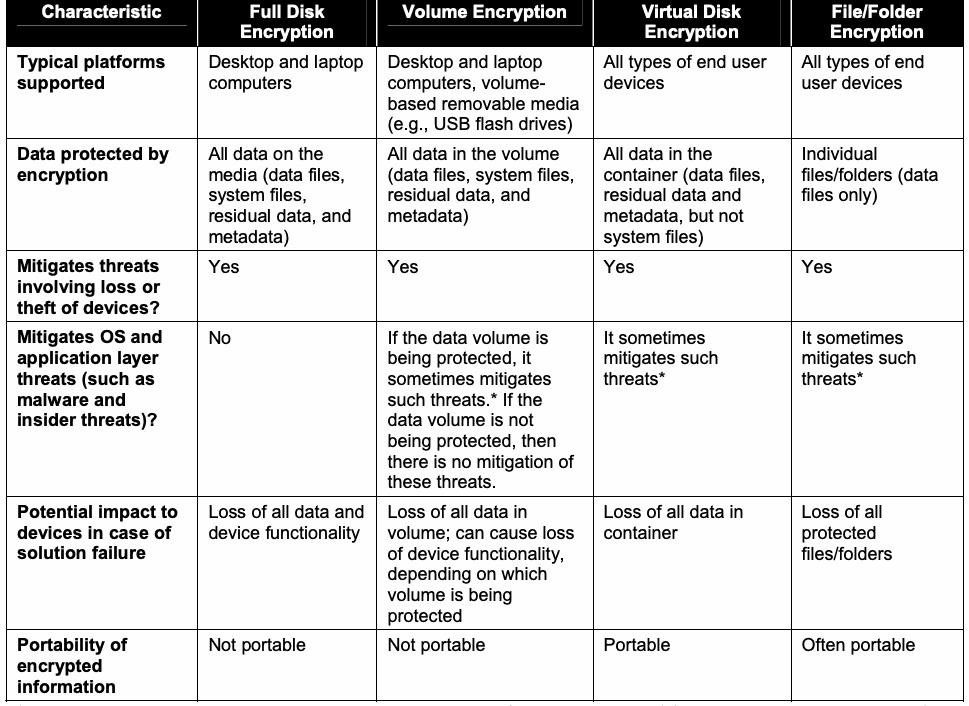
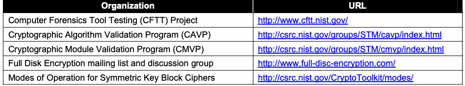
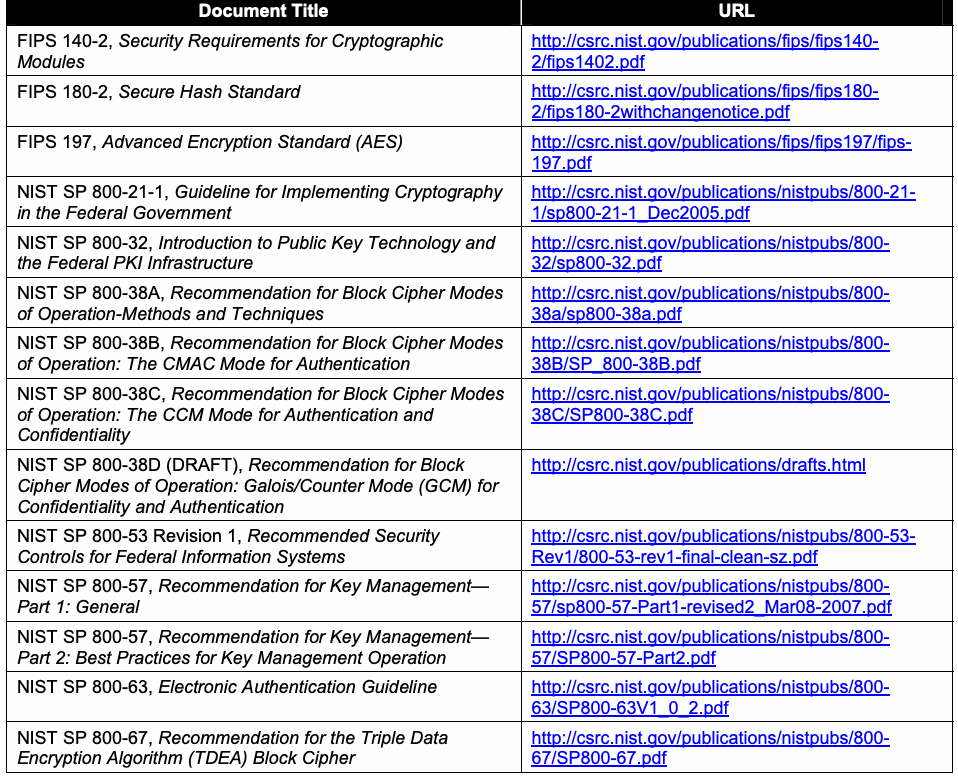

NIST SP 800-111 日本語訳
英語タイトル : Guide to Storage Encryption Technologies for End User Devices日本語タイトル : エンドユーザー端末向けストレージ暗号化技術ガイド
公開日 : 2007-11-15
原文URL : https://csrc.nist.gov/pubs/sp/800/111/final
翻訳編集 : 自動生成（有志による非公式の日本語訳）, 原文取得日 : 2026-09-30, 訳文 : 436 / 436 ブロック
[要約] SP 800-111 は、エンドユーザー端末に保存される情報を保護するストレージ暗号化技術を説明し、その計画・実装・保守を支援するガイドです。対象はパーソナルコンピューター、スマートフォンなどの消費者向け機器、リムーバブル記憶媒体で、ディスク全体の暗号化、ボリュームおよび仮想ディスクの暗号化、ファイル／フォルダー暗号化の三つの技法を扱います。ストレージ暗号化技術の選定、展開、管理、保守を担当する情報セキュリティ管理者、システム管理者などが読者で、実践的な推奨事項を示すことを目的としています。
［NIST のロゴ。公的な標章のため、この非公式サイトには掲載していない。原本 PDF を参照。］
Special Publication 800-111
特別刊行物 800-111
Guide to Storage Encryption Technologies for End User Devices
エンドユーザーデバイス向けストレージ暗号化技術ガイド
Recommendations of the National Institute of Standards and Technology
米国国立標準技術研究所の推奨事項
Karen Scarfone
Murugiah Souppaya
Matt Sexton
Karen Scarfone
Murugiah Souppaya
Matt Sexton
Guide to Storage Encryption Technologies
for End User Devices
エンドユーザーデバイス向け
ストレージ暗号化技術ガイド
NIST特別刊行物 800-111
Recommendations of the National Institute of Standards and Technology
米国国立標準技術研究所の推奨事項
Karen Scarfone
Murugiah Souppaya
Matt Sexton
Karen Scarfone
Murugiah Souppaya
Matt Sexton
C O M P U T E R S E C U R I T Y
コンピューターセキュリティ
Computer Security Division
Information Technology Laboratory
National Institute of Standards and Technology
Gaithersburg, MD 20899-8930
コンピューターセキュリティ部門
情報技術研究所
米国国立標準技術研究所
メリーランド州ゲイサーズバーグ 20899-8930
November 2007
2007年11月
U.S. Department of Commerce
米国商務省
Carlos M. Gutierrez, Secretary
Carlos M. Gutierrez 長官
National Institute of Standards and Technology
米国国立標準技術研究所
James M. Turner, Acting Director
James M. Turner 所長代理
Reports on Computer Systems Technology
コンピューターシステム技術報告
The Information Technology Laboratory (ITL) at the National Institute of Standards and Technology (NIST) promotes the U.S. economy and public welfare by providing technical leadership for the nation’s measurement and standards infrastructure. ITL develops tests, test methods, reference data, proof of concept implementations, and technical analysis to advance the development and productive use of information technology. ITL’s responsibilities include the development of technical, physical, administrative, and management standards and guidelines for the cost-effective security and privacy of sensitive unclassified information in Federal computer systems. This Special Publication 800-series reports on ITL’s research, guidance, and outreach efforts in computer security and its collaborative activities with industry, government, and academic organizations.
米国国立標準技術研究所（NIST）の情報技術研究所（ITL）は、米国の計測・標準基盤に技術的リーダーシップを提供することにより、米国経済と公共の福祉を促進している。ITLは、情報技術の開発と生産的利用を進めるため、試験、試験方法、参照データ、概念実証実装、および技術分析を開発する。ITLの責務には、連邦政府のコンピューターシステムにおける機微な非機密情報の費用対効果に優れたセキュリティとプライバシーのための、技術的、物理的、事務的および管理的な標準とガイドラインの開発が含まれる。この特別刊行物800シリーズは、コンピューターセキュリティに関するITLの研究、ガイダンス、普及活動、および産業界、政府、学術機関との協力活動を報告する。
National Institute of Standards and Technology Special Publication 800-111 Natl. Inst. Stand. Technol. Spec. Publ. 800-111, 40 pages (Nov. 2007)
米国国立標準技術研究所 特別刊行物800-111 Natl. Inst. Stand. Technol. Spec. Publ. 800-111, 40ページ（2007年11月）
原本PDFの抜粋画像

Acknowledgements
謝辞
The authors, Karen Scarfone and Murugiah Souppaya of the National Institute of Standards and Technology (NIST), and Matt Sexton of Booz Allen Hamilton, wish to thank their colleagues who reviewed drafts of this document and contributed to its technical content. In particular, their appreciation goes to Tim Grance, Bill Burr, and Tim Polk of NIST, and Derrick Dicoi, Angela Orebaugh, Manuel Villar, Mike Zeberlein, and Mike Zirkle of Booz Allen Hamilton, for their keen and insightful assistance throughout the development of the document. The authors also appreciate the efforts of those individuals, agencies, and other organizations that contributed input during the public comment period.
著者である米国国立標準技術研究所（NIST）のKaren ScarfoneおよびMurugiah Souppaya、ならびにBooz Allen HamiltonのMatt Sextonは、本書の草稿をレビューし、技術的内容に貢献した同僚に謝意を表する。特に、文書の作成を通じて鋭く洞察に富む支援を提供したNISTのTim Grance、Bill Burr、Tim Polk、およびBooz Allen HamiltonのDerrick Dicoi、Angela Orebaugh、Manuel Villar、Mike Zeberlein、Mike Zirkleに感謝する。また、パブリックコメント期間中に意見を寄せた個人、機関、その他の組織の尽力にも感謝する。
Table of Contents
目次
Executive Summary..............................................................................................................ES-1
エグゼクティブサマリー..............................................................................................................ES-1
1. Introduction ......................................................................................................................1-1
1. はじめに ......................................................................................................................1-1
1.1 Authority...................................................................................................................1-1
1.1 権限...................................................................................................................1-1
1.2 Purpose and Scope .................................................................................................1-1
1.2 目的と適用範囲 .................................................................................................1-1
1.3 Audience..................................................................................................................1-1
1.3 対象読者..................................................................................................................1-1
1.4 Document Structure.................................................................................................1-1
1.4 文書の構成.................................................................................................1-1
2. Storage Security Overview..............................................................................................2-1
2. ストレージセキュリティの概要..............................................................................................2-1
2.1 File Storage Basics..................................................................................................2-1
2.1 ファイルストレージの基礎..................................................................................................2-1
2.2 The Need for Storage Security ................................................................................2-2
2.2 ストレージセキュリティの必要性 ................................................................................2-2
2.3 Security Controls for Storage...................................................................................2-3
2.3 ストレージのセキュリティ管理策...................................................................................2-3
3. Storage Encryption Technologies..................................................................................3-1
3. ストレージ暗号化技術..................................................................................3-1
3.1 Common Types of Storage Encryption Technologies..............................................3-1
3.1 ストレージ暗号化技術の一般的な種類..............................................3-1
3.1.1 Full Disk Encryption......................................................................................3-1
3.1.1 ディスク全体の暗号化......................................................................................3-1
3.1.2 Virtual Disk Encryption and Volume Encryption ...........................................3-3
3.1.2 仮想ディスク暗号化およびボリューム暗号化 ...........................................3-3
3.1.3 File/Folder Encryption...................................................................................3-4
3.1.3 ファイル/フォルダー暗号化...................................................................................3-4
3.2 Protection Provided by Storage Encryption Technologies.......................................3-5
3.2 ストレージ暗号化技術による保護.......................................3-5
3.3 Comparison of Storage Encryption Technologies....................................................3-6
3.3 ストレージ暗号化技術の比較....................................................3-6
3.3.1 Use Case 1: Sharing a Laptop .....................................................................3-8
3.3.1 ユースケース1: ノートPCの共有 .................................................................3-8
3.3.2 Use Case 2: Transferring Files Between Computers ...................................3-8
3.3.2 ユースケース2: コンピューター間のファイル転送 ...................................3-8
3.3.3 Use Case 3: Sharing Data with Contractor...................................................3-8
3.3.3 ユースケース3: 請負業者とのデータ共有...................................................3-8
3.3.4 Use Case 4: Traveling with a Laptop............................................................3-9
3.3.4 ユースケース4: ノートPCを携行した旅行............................................................3-9
3.3.5 Use Case 5: Traveling with a Dual-Boot Laptop...........................................3-9
3.3.5 ユースケース5: デュアルブートのノートPCを携行した旅行........................................3-9
3.4 Storage Encryption Technology Management.........................................................3-9
3.4 ストレージ暗号化技術の管理.........................................................3-9
4. Storage Encryption Technology Planning and Implementation..................................4-1
4. ストレージ暗号化技術の計画と実装..................................4-1
4.1 Identify Needs..........................................................................................................4-1
4.1 ニーズの特定..........................................................................................................4-1
4.2 Design the Solution..................................................................................................4-2
4.2 ソリューションの設計..................................................................................................4-2
4.2.1 Cryptography................................................................................................4-3
4.2.1 暗号技術................................................................................................4-3
4.2.2 Authentication...............................................................................................4-4
4.2.2 認証...............................................................................................4-4
4.3 Implement and Test Prototype.................................................................................4-6
4.3 プロトタイプの実装と試験.................................................................................4-6
4.4 Deploy the Solution..................................................................................................4-8
4.4 ソリューションの展開..................................................................................................4-8
4.5 Manage the Solution................................................................................................4-8
4.5 ソリューションの管理................................................................................................4-8
Appendix A— Alternatives to Encrypting Storage on End User Devices.......................... A-1
付録A—エンドユーザーデバイスのストレージ暗号化に代わる手段.......................... A-1
Appendix B— Glossary .......................................................................................................... B-1
付録B—用語集 .......................................................................................................... B-1
Appendix C— Acronyms........................................................................................................ C-1
付録C—略語........................................................................................................ C-1
Appendix D— Tools and Resources ..................................................................................... D-1
付録D—ツールとリソース ..................................................................................... D-1
List of Tables
表一覧
Table 3-1. Characteristics of Storage Encryption Technologies ...............................................3-7
表3-1. ストレージ暗号化技術の特性 ...............................................3-7
Executive Summary
エグゼクティブサマリー
In today’s computing environment, there are many threats to the confidentiality of information stored on end user devices, such as personal computers, consumer devices (e.g., personal digital assistant, smart phone), and removable storage media (e.g., universal serial bus [USB] flash drive, memory card, external hard drive, writeable CD or DVD). Some threats are unintentional, such as human error, while others are intentional. Intentional threats are posed by people with many different motivations, including causing mischief and disruption and committing identity theft and other fraud. A common threat against end user devices is device loss or theft. Someone with physical access to a device has many options for attempting to view or copy the information stored on the device. Another concern is insider attacks, such as an employee attempting to access sensitive information stored on another employee’s device. Malware, another common threat, can give attackers unauthorized access to a device, transfer information from the device to an attacker’s system, and perform other actions that jeopardize the confidentiality of the information on a device.
今日のコンピューティング環境では、パーソナルコンピューター、消費者向け機器（携帯情報端末、スマートフォンなど）、およびリムーバブル記憶媒体（ユニバーサルシリアルバス[USB]フラッシュドライブ、メモリーカード、外付けハードドライブ、書き込み可能なCDまたはDVDなど）といったエンドユーザーデバイスに保存された情報の機密性を脅かす要因が数多くある。人為的ミスなどの偶発的な脅威もあれば、意図的な脅威もある。意図的な脅威は、いたずらや妨害、個人情報窃盗その他の詐欺を企てるなど、さまざまな動機を持つ人々によってもたらされる。エンドユーザーデバイスに対する一般的な脅威は、デバイスの紛失または盗難である。デバイスに物理的にアクセスできる者は、保存情報を閲覧または複製するためにさまざまな手段を試みることができる。従業員が他の従業員のデバイスに保存された機微情報へアクセスしようとするなど、内部者による攻撃も懸念事項である。もう1つの一般的な脅威であるマルウェアは、攻撃者にデバイスへの不正アクセスを許し、デバイスから攻撃者のシステムに情報を転送し、その他デバイス上の情報の機密性を損なう行為を実行する可能性がある。
Many threats against end user devices could cause information stored on the devices to be accessed by unauthorized parties. To prevent such disclosures of information, particularly of personally identifiable information (PII) and other sensitive data, the information needs to be secured. Securing other components of end user devices, such as operating systems, is also necessary, but in many cases additional measures are needed to secure the stored information. This publication explains the basics of storage security, which is the process of allowing only authorized parties to access and use stored information. The primary security controls for restricting access to sensitive information stored on end user devices are encryption and authentication. Encryption can be applied granularly, such as to an individual file containing sensitive information, or broadly, such as encrypting all stored data. The appropriate encryption solution for a particular situation depends primarily upon the type of storage, the amount of information that needs to be protected, the environments where the storage will be located, and the threats that need to be mitigated. This publication describes three types of solutions—full disk encryption, volume and virtual disk encryption, and file/folder encryption—and makes recommendations for implementing and using each type. This publication also includes several use case examples, which illustrate that there are multiple ways to meet most storage encryption needs. When selecting a solution type, organizations should consider the range of solutions that meet the organization’s security requirements, and not just the solution type that is most commonly used.
エンドユーザーデバイスに対する多くの脅威は、権限のない者によるデバイス内の保存情報へのアクセスを引き起こす可能性がある。このような情報開示、とりわけ個人を特定できる情報（PII）やその他の機微データの開示を防ぐには、情報を保護する必要がある。オペレーティングシステムなど、エンドユーザーデバイスの他の構成要素を保護することも必要だが、保存情報を保護するには、追加の対策が必要な場合が多い。本書では、権限のある者だけが保存情報にアクセスし利用できるようにするプロセスであるストレージセキュリティの基礎を説明する。エンドユーザーデバイスに保存された機微情報へのアクセスを制限する主なセキュリティ管理策は、暗号化と認証である。暗号化は、機微情報を含む個々のファイルに適用するよう細かく設定することも、保存データ全体を暗号化するよう広く適用することもできる。特定の状況に適した暗号化ソリューションは、主としてストレージの種類、保護が必要な情報量、ストレージが配置される環境、および軽減すべき脅威によって決まる。本書では、ディスク全体の暗号化、ボリュームおよび仮想ディスクの暗号化、ファイル/フォルダー暗号化という3種類のソリューションを説明し、それぞれの実装と利用に関する推奨事項を示す。また、本書にはいくつかのユースケース例も含まれており、それらはストレージ暗号化のニーズの大半について、満たす方法が複数あることを示している。ソリューションの種類を選ぶ際、組織は最も一般的に使用されている種類だけでなく、組織のセキュリティ要件を満たすソリューションの範囲を考慮すべきである。
Implementing the following recommendations should facilitate more efficient and effective storage encryption solution design, implementation, and management for Federal departments and agencies.
次の推奨事項を実施することで、連邦政府の省庁・機関におけるストレージ暗号化ソリューションの設計、実装、管理をより効率的かつ効果的に行えるようになるはずである。
When selecting a storage encryption technology, organizations should consider solutions that use existing system features (such as operating system features) and infrastructure.
ストレージ暗号化技術を選択する際、組織は既存のシステム機能（オペレーティングシステムの機能など）やインフラストラクチャを利用するソリューションを検討すべきである。
There are many factors for organizations to consider when selecting storage encryption solutions, such as the platforms they support, the data they protect, and the threats they mitigate. Some solutions involve deploying various servers and installing software on the devices to be protected, while other solutions can use existing servers, as well as software built into the devices to be protected, such as Federal Information Processing Standard (FIPS) approved encryption features built into the devices’ operating systems. Generally, the more extensive the changes are to the infrastructure and devices, the more likely it is that the storage encryption solution will cause a loss of functionality or other problems with the devices. When evaluating solutions, organizations should compare the loss of functionality with the gain in security capabilities and decide if the tradeoff is acceptable. Solutions that require extensive changes to the infrastructure and end user devices should generally be used only when other solutions cannot meet the organization’s needs.
ストレージ暗号化ソリューションを選択する際に組織が検討すべき要因は、サポート対象プラットフォーム、保護対象データ、軽減対象の脅威など、数多くある。さまざまなサーバーの導入や保護対象デバイスへのソフトウェアのインストールを伴うソリューションもあれば、既存サーバーや、デバイスのオペレーティングシステムに組み込まれた連邦情報処理標準（FIPS）承認済みの暗号化機能など、保護対象デバイスに組み込まれたソフトウェアを利用できるソリューションもある。一般に、インフラストラクチャやデバイスへの変更が広範になるほど、ストレージ暗号化ソリューションがデバイスの機能の損失やその他の問題を引き起こす可能性が高まる。ソリューションを評価する際、組織は機能の損失とセキュリティ機能の向上を比較し、そのトレードオフが許容できるか判断すべきである。インフラストラクチャとエンドユーザーデバイスに広範な変更を要するソリューションは、一般に、他のソリューションでは組織のニーズを満たせない場合に限って使用すべきである。
Organizations should use centralized management for all deployments of storage encryption except for standalone deployments and very small-scale deployments.
スタンドアロンの導入とごく小規模な導入を除き、組織はストレージ暗号化のすべての導入で集中管理を使用すべきである。
Centralized management is recommended for most storage encryption deployments because of its effectiveness and efficiency for policy verification and enforcement, key management, authenticator management, data recovery, and other management tasks. Centralized management can also automate deployment and configuration of storage encryption software to end user devices, distribution and installation of updates, collection and review of logs, and recovery of information from local failures.
ポリシーの検証と適用、鍵管理、認証器管理、データ復旧、その他の管理作業において有効かつ効率的であるため、ほとんどのストレージ暗号化導入では集中管理が推奨される。集中管理により、ストレージ暗号化ソフトウェアのエンドユーザーデバイスへの展開と構成、更新の配布とインストール、ログの収集とレビュー、ローカル障害からの情報復旧も自動化できる。
Organizations should ensure that all cryptographic keys used in a storage encryption solution are secured and managed properly to support the security of the solution.
組織は、ストレージ暗号化ソリューションで使われるすべての暗号鍵が保護され、ソリューションのセキュリティを支えるよう適切に管理されることを確保すべきである。
Storage encryption technologies use one or more cryptographic keys to encrypt and decrypt the data that they protect. If a key is lost or damaged, it may not be possible to recover the encrypted data from the computer. Therefore, organizations should perform extensive planning of key management processes, procedures, and technologies before implementing storage encryption technologies. This planning should include all aspects of key management, including key generation, use, storage, recovery, and destruction. Organizations should carefully consider how key management practices can support the recovery of encrypted data if a key is inadvertently destroyed or otherwise becomes unavailable. Organizations planning on encrypting removable media also need to consider how changing keys will affect access to encrypted storage on removable media and develop feasible solutions, such as retaining the previous keys in case they are needed.
ストレージ暗号化技術は、保護対象データの暗号化と復号に1つ以上の暗号鍵を使用する。鍵が失われたり損傷したりすると、コンピューターから暗号化データを復旧できなくなる場合がある。したがって、組織はストレージ暗号化技術を実装する前に、鍵管理のプロセス、手順、技術について広範な計画を行うべきである。この計画には、鍵の生成、使用、保管、復旧、破棄など、鍵管理のすべての側面を含めるべきである。鍵が誤って破棄されたり、その他の理由で利用できなくなったりした場合に、暗号化データの復旧を鍵管理の実務でどう支援できるか、組織は慎重に検討すべきである。リムーバブルメディアの暗号化を予定している組織は、鍵の変更がリムーバブルメディア上の暗号化ストレージへのアクセスにどう影響するかも考慮し、必要になる場合に備えて以前の鍵を保持するなど、実行可能な解決策を策定する必要がある。
Organizations should select appropriate user authenticators for storage encryption solutions.
組織はストレージ暗号化ソリューションに適したユーザー認証器を選択すべきである。
Storage encryption solutions require users to authenticate successfully before accessing the information that has been encrypted. Common authentication mechanisms are passwords, personal identification numbers, cryptographic tokens, biometrics, and smart cards. Organizations should consider leveraging existing enterprise authentication solutions (e.g., Active Directory, public key infrastructure [PKI]) instead of adding another authenticator for users. Generally, this is acceptable if two-factor authentication is being used. Using the same single-factor authenticator for multiple purposes, such as operating system (OS) authentication and storage encryption authentication, significantly weakens the protection that authentication provides. For example, an attacker who learns a single password could gain full access to the device’s information. Organizations should carefully consider the security implications of using the same single-factor authenticator for multiple purposes. In particular, organizations should not use email passwords and other passwords sometimes transmitted in plaintext as single-factor authenticators for storage encryption.
ストレージ暗号化ソリューションでは、暗号化された情報にアクセスする前にユーザー認証を正常に完了する必要がある。一般的な認証メカニズムは、パスワード、個人識別番号、暗号トークン、生体認証、スマートカードである。ユーザーに別の認証器を追加する代わりに、既存のエンタープライズ認証ソリューション（Active Directory、公開鍵基盤[PKI]など）を活用することを組織は検討すべきである。一般に、二要素認証を使用している場合には許容できる。同じ単一要素認証器を、オペレーティングシステム（OS）認証とストレージ暗号化認証など複数の目的に使うと、認証による保護が大幅に弱まる。たとえば、攻撃者が1つのパスワードを知れば、デバイス内情報へ全面的にアクセスできる可能性がある。同じ単一要素認証器を複数目的に使うことのセキュリティ上の影響を、組織は慎重に検討すべきである。特に、ストレージ暗号化の単一要素認証器として、電子メールパスワードなど、平文で送信される場合があるパスワードを使用すべきではない。
Organizations should implement measures that support and complement storage encryption implementations for end user devices.
組織は、エンドユーザーデバイス向けストレージ暗号化の実装を支援し補完する対策を講じるべきである。
Storage encryption by itself cannot provide adequate security for stored information; additional security controls are needed. Organizations should select and deploy the necessary controls based on FIPS 199’s categories for the potential impact of a security breach involving a particular system and NIST Special Publication 800-53’s recommendations for minimum management, operational, and technical security controls. Examples of supporting controls are as follows:
ストレージ暗号化だけでは保存情報に十分なセキュリティを提供できず、追加のセキュリティ管理策が必要である。組織は、特定システムに関するセキュリティ侵害の潜在的影響に対するFIPS 199の分類と、最低限の管理的、運用上、技術的セキュリティ管理策に関するNIST特別刊行物800-53の推奨事項に基づいて、必要な管理策を選択し導入すべきである。支援管理策の例を以下に示す:
▪ Revising organizational policies as needed to incorporate appropriate usage of the storage encryption solution.
▪ 組織ポリシーを必要に応じて改訂し、ストレージ暗号化ソリューションの適切な使用を盛り込む。
▪ Securing and maintaining end user devices properly, which should reduce the risk of compromise or misuse. This includes securing device operating systems, applications, and communications, and physically securing devices.
▪ エンドユーザーデバイスを適切に保護・保守する。これにより、侵害や誤用のリスクが低減されるはずである。これには、デバイスのオペレーティングシステム、アプリケーション、通信の保護、およびデバイスの物理的保護が含まれる。
▪ Making users aware of their responsibilities for storage encryption, such as encrypting sensitive files, physically protecting mobile devices and removable media, and promptly reporting loss or theft of devices and media.
▪ ユーザーに、機微ファイルの暗号化、モバイルデバイスやリムーバブルメディアの物理的保護、デバイスやメディアの紛失・盗難の迅速な報告など、ストレージ暗号化に関する責任を認識させる。
1. Introduction
1. はじめに
1.1 Authority
1.1 権限
The National Institute of Standards and Technology (NIST) developed this document in furtherance of its statutory responsibilities under the Federal Information Security Management Act (FISMA) of 2002, Public Law 107-347.
国立標準技術研究所（NIST）は、2002年連邦情報セキュリティマネジメント法（FISMA）、公法107-347に基づく法定責任を遂行するため、本書を作成した。
NIST is responsible for developing standards and guidelines, including minimum requirements, for providing adequate information security for all agency operations and assets; but such standards and guidelines shall not apply to national security systems. This guideline is consistent with the requirements of the Office of Management and Budget (OMB) Circular A-130, Section 8b(3), “Securing Agency Information Systems,” as analyzed in A-130, Appendix IV: Analysis of Key Sections. Supplemental information is provided in A-130, Appendix III.
NISTは、すべての機関の業務および資産に対して適切な情報セキュリティを提供するための標準とガイドライン（最低要件を含む）を策定する責任を負う。ただし、これらの標準とガイドラインは国家安全保障システムには適用されないものとする。本ガイドラインは、A-130付録IV「主要項目の分析」で分析されている、行政管理予算局（OMB）通達A-130第8b(3)項「機関情報システムの保護」の要件と整合している。補足情報はA-130付録IIIに記載されている。
This guideline has been prepared for use by Federal agencies. It may be used by nongovernmental organizations on a voluntary basis and is not subject to copyright, though attribution is desired.
本ガイドラインは連邦機関が使用するために作成された。非政府組織も任意で使用でき、著作権の対象ではないが、出典を明記することが望ましい。
Nothing in this document should be taken to contradict standards and guidelines made mandatory and binding on Federal agencies by the Secretary of Commerce under statutory authority, nor should these guidelines be interpreted as altering or superseding the existing authorities of the Secretary of Commerce, Director of the OMB, or any other Federal official.
本書のいかなる記述も、法的権限に基づき商務長官が連邦機関に義務付け、拘束力を持たせた標準およびガイドラインと矛盾するものと解釈してはならない。また、本ガイドラインを、商務長官、OMB局長、その他の連邦政府職員の既存の権限を変更または置き換えるものと解釈してはならない。
1.2 Purpose and Scope
1.2 目的と適用範囲
The purpose of this document is to assist organizations in understanding storage encryption technologies for end user devices and in planning, implementing, and maintaining storage encryption solutions. The types of end user devices addressed in this document are personal computers (desktops and laptops), consumer devices (e.g., personal digital assistants, smart phones), and removable storage media (e.g., USB flash drives, memory cards, external hard drives, writeable CDs and DVDs). This document provides practical, real-world guidance for three classes of storage encryption techniques: full disk encryption, volume and virtual disk encryption, and file/folder encryption. It also discusses important security elements of a storage encryption deployment, including cryptographic key management and authentication. It only discusses the encryption of data at rest (storage), and does not address the encryption of data in motion (transmission).
本書の目的は、組織がエンドユーザーデバイス向けストレージ暗号化技術を理解し、ストレージ暗号化ソリューションを計画、実装、保守することを支援することである。本書が扱うエンドユーザーデバイスの種類は、パーソナルコンピューター（デスクトップおよびノートPC）、消費者向け機器（携帯情報端末、スマートフォンなど）、リムーバブル記憶媒体（USBフラッシュドライブ、メモリーカード、外付けハードドライブ、書き込み可能なCDおよびDVDなど）である。本書は、ディスク全体の暗号化、ボリュームおよび仮想ディスクの暗号化、ファイル/フォルダー暗号化という3種類のストレージ暗号化技法について、実践的かつ現実的なガイダンスを提供する。また、暗号鍵管理や認証など、ストレージ暗号化の導入における重要なセキュリティ要素も論じる。本書が扱うのは保存データ（ストレージ）の暗号化のみであり、転送中データ（伝送）の暗号化は扱わない。
1.3 Audience
1.3 対象読者
This document has been created for information security program managers and staff, system administrators, and others who are responsible for selecting, deploying, managing, and maintaining storage encryption technologies for end user devices. This document does not assume that the reader has previous experience with any storage encryption technologies, but it does assume that the reader has experience with information security.
本書は、エンドユーザーデバイス向けストレージ暗号化技術の選定、展開、管理、保守を担当する情報セキュリティプログラム管理者と職員、システム管理者、その他の関係者を対象としている。読者がストレージ暗号化技術の使用経験を持つことは前提としないが、情報セキュリティの経験はあるものとする。
1.4 Document Structure
1.4 文書の構成
The remainder of this document is organized into three major sections.
本書の残りは、3つの主要な節で構成される。
▪ Section 2 provides an overview of the basic concepts of storage encryption for end user devices.
▪ 第2節では、エンドユーザーデバイス向けストレージ暗号化の基本概念を概説する。
▪ Section 3 describes the most commonly used categories of storage encryption technologies for end user devices, and explains the types of protection they provide.
▪ 第3節では、エンドユーザーデバイス向けストレージ暗号化技術のうち最も一般的に使用されているカテゴリーを説明し、それらが提供する保護の種類を解説する。
▪ Section 4 discusses the process of planning and implementing storage encryption technologies for end user devices. It includes a detailed discussion of the importance of cryptography and authentication to a storage encryption solution.
▪ 第4節では、エンドユーザーデバイス向けストレージ暗号化技術の計画と実装のプロセスを論じる。同節には、ストレージ暗号化ソリューションにとっての暗号技術と認証の重要性に関する詳細な議論が含まれる。
The document also contains several appendices with supporting material.
本書には、補足資料を含む複数の付録もある。
▪ Appendix A describes alternatives to encrypting storage on end user devices.
▪ 付録Aでは、エンドユーザーデバイスのストレージの暗号化に代わる手段を説明する。
▪ Appendices B and C contain a glossary and acronym list, respectively.
▪ 付録BおよびCには、それぞれ用語集と略語一覧を収録する。
▪ Appendix D lists online tools and resources that may be useful references for gaining a better understanding of storage encryption for end user devices.
▪ 付録Dでは、エンドユーザーデバイス向けストレージ暗号化をよりよく理解するための参考資料として役立つ可能性のあるオンラインツールとリソースを列挙する。
2. Storage Security Overview
2. ストレージセキュリティの概要
An end user device is a personal computer (desktop or laptop), consumer device (e.g., personal digital assistant [PDA], smart phone), or removable storage media (e.g., USB flash drive, memory card, external hard drive, writeable CD or DVD) that can store information.1 Storage security is the process of allowing only authorized parties to access and use stored information. This section introduces the basic concepts of storage security for end user devices.2
エンドユーザーデバイスとは、情報を保存できるパーソナルコンピューター（デスクトップまたはノートPC）、消費者向け機器（携帯情報端末[PDA]、スマートフォンなど）、またはリムーバブル記憶媒体（USBフラッシュドライブ、メモリーカード、外付けハードドライブ、書き込み可能なCDまたはDVDなど）である。1ストレージセキュリティとは、権限のある者だけが保存情報にアクセスし、利用できるようにするプロセスである。本節では、エンドユーザーデバイスのストレージセキュリティに関する基本概念を紹介する。2
2.1 File Storage Basics
2.1 ファイルストレージの基礎
A file is a collection of information logically grouped into a single entity and referenced by a unique name, such as a filename. On end user devices, there are typically two types of files: data files, such as text documents, spreadsheets, images, and videos, and system files, such as operating system and application binaries and libraries. A filesystem defines the way that files are named, stored, organized, and accessed. Directories, also known as folders, are organizational structures used by filesystems to group files. Another feature of a filesystem is metadata, which is data about data—in the context of a filesystem, information regarding the files and folders themselves, such as file and folder names, creation dates and times, and sizes.
ファイルとは、論理的に1つの実体にまとめられ、ファイル名などの一意の名前で参照される情報の集合である。エンドユーザーデバイス上のファイルは通常、テキスト文書、スプレッドシート、画像、動画などのデータファイルと、オペレーティングシステムやアプリケーションのバイナリおよびライブラリなどのシステムファイルの2種類である。ファイルシステムは、ファイルの命名、保存、整理、アクセス方法を定義する。ディレクトリ（フォルダーとも呼ばれる）は、ファイルシステムがファイルをグループ化するために使う編成構造である。ファイルシステムのもう1つの要素はメタデータ、すなわちデータに関するデータである。ファイルシステムでは、ファイル名やフォルダー名、作成日時、サイズなど、ファイルやフォルダー自体に関する情報を指す。
Filesystems are designed to store folders, system and data files, and metadata on storage media. However, storage media may also hold residual data, which is data from deleted files (including earlier versions of existing files and temporary files). Residual data can often be recovered from an end user device through forensic analysis. The following items describe common forms of residual data:
ファイルシステムは、ストレージメディア上にフォルダー、システムファイル、データファイル、メタデータを保存するよう設計されている。しかし、ストレージメディアには残留データ、すなわち削除済みファイル（既存ファイルの以前のバージョンや一時ファイルを含む）のデータが残る場合もある。残留データは、フォレンジック分析を通じてエンドユーザーデバイスから復旧できることが多い。残留データの一般的な形態を以下に示す:
▪ Unused File Allocation Units. Filesystems store files in chunks known as file allocation units. Unused file allocation units are the units within a partition that are not currently being used by the filesystem. When a file is deleted, it is typically not erased from the media; instead, the information in the directory’s data structure that points to the location of the file is marked as deleted. This means that the file is still stored on the media but is no longer enumerated by the operating system (OS). The OS considers this to be unused space and can overwrite any portion of or the entire deleted file at any time.
▪ 未使用ファイル割当単位。ファイルシステムは、ファイルをファイル割当単位と呼ばれる区画に保存する。未使用ファイル割当単位とは、パーティション内でファイルシステムが現在使用していない単位である。ファイルを削除しても、通常はメディアから消去されない。代わりに、ファイルの場所を指すディレクトリのデータ構造内の情報に削除済みの印が付く。つまり、ファイルはメディア上に残っているが、オペレーティングシステム（OS）から列挙されなくなる。OSはその領域を未使用領域と見なし、削除済みファイルの一部または全部をいつでも上書きできる。
▪ Slack Space. Even if a file requires less space than the file allocation unit size, an entire file allocation unit is still reserved for the file. For example, if the file allocation unit size is 32 kilobytes (KB) and a file is only 7 KB, the entire 32 KB is still allocated to the file, but only 7 KB is used, resulting in 25 KB of unused space. This unused space is referred to as file slack space, and it may hold residual data such as portions of deleted files.
▪ スラック領域。ファイルがファイル割当単位のサイズより小さくても、ファイル割当単位全体がそのファイル用に確保される。たとえば、ファイル割当単位が32キロバイト（KB）で、ファイルが7 KBしかない場合も、32 KB全体が割り当てられ、7 KBだけが使用されるため、25 KBが未使用となる。この未使用領域をファイルスラック領域といい、削除済みファイルの一部などの残留データを含む場合がある。
▪ Free Space. Free space is the area on media that is not currently allocated to a partition. This often includes space on the media where files may have resided at one point but have since been deleted. The free space may still contain pieces of data.
▪ 空き領域。空き領域とは、現在パーティションに割り当てられていないメディア上の領域である。ここには、以前ファイルが存在していたものの削除された領域が含まれることが多い。空き領域にデータの断片が残っている場合がある。
Before media can be used to store files, the media must usually be partitioned and formatted into logical volumes. Partitioning is the act of logically dividing a media into portions that function as separate units. A logical volume is a partition or a collection of partitions acting as a single entity that has been formatted with a filesystem. Some media types can contain only one partition (and consequently, one logical volume), while others can contain multiple partitions.
ファイルを保存するためにメディアを使用できるようにするには、通常、メディアをパーティション分割し、論理ボリュームにフォーマットする必要がある。パーティション分割とは、メディアを論理的に複数の部分へ分割し、それぞれを独立した単位として機能させることである。論理ボリュームとは、1つのパーティション、または単一の実体として機能するパーティションの集合であって、ファイルシステムでフォーマットされたものである。メディアの種類によって、パーティション（したがって論理ボリューム）を1つしか含められないものも、複数含められるものもある。
2.2 The Need for Storage Security
2.2 ストレージセキュリティの必要性
In today’s computing environment, there are many threats to the confidentiality of information stored on end user devices. Some threats are unintentional, such as human error, while others are intentional. Intentional threats are posed by people with many different motivations, including causing mischief and disruption and committing identity theft and other fraud. One of the most common threats is malware, also known as malicious code, which refers to a program that is inserted into a system, usually covertly, with the intent of compromising the confidentiality, integrity, or availability of the victim’s data, applications, or OS. Types of malware threats include viruses, worms, malicious mobile code, Trojan horses, rootkits, and spyware. Malware can give attackers unauthorized access to a device, transfer information from the device to an attacker’s system, and perform other actions that jeopardize the confidentiality of the information on a device. Another common threat against end user devices is device loss or theft. Someone with physical access to a device has many options for attempting to view the information stored on the device. This is also a concern for insider attacks, such as an employee attempting to access sensitive information stored on another employee’s device. Another form of insider attack is a user attempting to access another user’s files on a device that the two users share.
今日のコンピューティング環境では、エンドユーザーデバイスに保存された情報の機密性を脅かす要因が数多くある。人為的ミスなどの偶発的な脅威もあれば、意図的な脅威もある。意図的な脅威は、いたずらや妨害を引き起こすこと、個人情報窃盗その他の詐欺を働くことなど、さまざまな動機を持つ人々によってもたらされる。最も一般的な脅威の1つはマルウェア（悪意のあるコードとも呼ばれる）である。これは、被害者のデータ、アプリケーション、またはOSの機密性、完全性、可用性を侵害する目的で、通常はひそかにシステムへ挿入されるプログラムを指す。マルウェアの脅威の種類には、ウイルス、ワーム、悪意のあるモバイルコード、トロイの木馬、ルートキット、スパイウェアがある。マルウェアは攻撃者にデバイスへの不正アクセスを許し、デバイスから攻撃者のシステムへ情報を転送し、その他デバイス内情報の機密性を損なう行為を実行する可能性がある。エンドユーザーデバイスに対するもう1つの一般的な脅威は、デバイスの紛失または盗難である。デバイスに物理的にアクセスできる者は、デバイスに保存された情報の閲覧を試みるための手段を数多く持つ。このことは、従業員が他の従業員のデバイスに保存された機微情報へアクセスしようとするなど、内部者による攻撃についても懸念事項となる。内部者攻撃のもう1つの形態は、2人のユーザーが共有するデバイス上で、一方のユーザーが他方のユーザーのファイルにアクセスしようとすることである。
Many threats against end user devices could cause information stored on the devices to be accessed by unauthorized parties. To prevent such disclosures of information, particularly of personally identifiable information (PII)3 and other sensitive data, the information needs to be secured. Securing other components of end user devices, such as OSs, is also necessary, but in many cases additional measures are needed to secure the stored information. For example, without these additional measures, an attacker that steals a device could use forensic tools and techniques to recover information directly from the storage media, circumventing the protections applied by the device’s OS.
エンドユーザーデバイスに対する多くの脅威は、権限のない者によるデバイス内情報へのアクセスを引き起こす可能性がある。このような情報開示、とりわけ個人を特定できる情報（PII）3やその他の機微データの開示を防ぐには、情報を保護する必要がある。OSなど、エンドユーザーデバイスの他の構成要素を保護することも必要だが、保存情報を保護するには追加対策が必要な場合が多い。たとえば、追加対策がなければ、デバイスを盗んだ攻撃者はフォレンジックツールと技法を使い、デバイスのOSが適用する保護を回避して、ストレージメディアから直接情報を復旧できる。
A number of laws and regulations compel organizations to ensure that sensitive information is protected appropriately. The following is a list of key regulations, standards, and guidelines that help define organizations’ needs for storage security:4
多くの法律や規制は、機微情報が適切に保護されることを確実にするよう組織に義務付けている。ストレージセキュリティに関する組織のニーズを定義する助けとなる主要な規制、標準、ガイドラインを以下に示す:4
▪ Federal Information Security Management Act of 2002 (FISMA). FISMA emphasizes the need for each Federal agency to develop, document, and implement an organization-wide program to provide information security for the information systems that support its operations and assets. NIST Special Publication (SP) 800-53, Recommended Security Controls for Federal Information Systems, was developed in support of FISMA.5 NIST SP 800-53 is the primary source of recommended security controls for Federal agencies. It describes several controls related to storage security, such as controlling access through encryption of stored information, restricting access to mobile computing devices and information system media, and storing media in physically secure locations.
▪ 2002年連邦情報セキュリティマネジメント法（FISMA）。FISMAは、各連邦機関が、業務と資産を支える情報システムの情報セキュリティを確保するため、組織全体を対象とするプログラムを策定、文書化、実施する必要性を強調する。FISMAを支援するため、NIST特別刊行物（SP）800-53『連邦情報システムに対する推奨セキュリティ管理策』が作成された。5 NIST SP 800-53は、連邦機関向けの推奨セキュリティ管理策の主要な情報源である。同書は、保存情報の暗号化によるアクセス制御、モバイルコンピューティングデバイスおよび情報システムメディアへのアクセス制限、メディアの物理的に安全な場所への保管など、ストレージセキュリティに関連する複数の管理策を説明する。
▪ OMB Memorandum M-06-16. OMB has issued a memorandum directly related to storage security. OMB M-06-16 addresses the protection of agency information that is either “accessed remotely or physically transported outside of the agency’s secured, physical perimeter”. It specifically requires that agencies encrypt all data stored on mobile computing devices, such as laptops and PDAs, unless the data has been determined by the designated agency official to be non-sensitive.6 Similar requirements are also included in OMB Memorandum M-07-16.7
▪ OMB覚書M-06-16。OMBはストレージセキュリティに直接関連する覚書を発行している。OMB M-06-16は、「遠隔からアクセスされる、または機関の保護された物理的境界の外へ物理的に持ち出される」機関情報の保護を扱う。同覚書は具体的に、指定された機関職員がデータを非機微と判断した場合を除き、ノートPCやPDAなどのモバイルコンピューティングデバイスに保存されたすべてのデータを暗号化するよう、機関に要求する。6 OMB覚書M-07-16にも同様の要件が含まれている。⁷
▪ Privacy Act of 1974. The Privacy Act regulates the collection, use, maintenance, and dissemination of personal information about U.S. citizens or aliens lawfully admitted for permanent residence. It applies to records maintained by agencies in the executive branch of the government.
▪ 1974年プライバシー法。プライバシー法は、米国市民または永住を合法的に認められた外国人に関する個人情報の収集、利用、保有、提供を規制する。同法は、政府の行政府に属する機関が保有する記録に適用される。
▪ Gramm-Leach-Bliley Act (GLBA). GLBA requires financial institutions to protect their customers’ information against security threats. This includes ensuring “the security and confidentiality of customer records and information” and protecting “against unauthorized access to or use of such records or information”.8
▪ グラム・リーチ・ブライリー法（GLBA）。GLBAは、金融機関に対し、セキュリティ上の脅威から顧客情報を保護するよう求める。これには「顧客記録および情報のセキュリティと機密性」を確保し、「当該記録または情報への不正アクセスまたは利用」を防ぐことが含まれる。8
▪ Health Insurance Portability and Accountability Act of 1996 (HIPAA). HIPAA includes security standards for certain health information. NIST SP 800-66, An Introductory Resource Guide for Implementing the Health Insurance Portability and Accountability Act (HIPAA) Security Rule, lists HIPAA-related storage security needs.9 For example, Section 4.14 of NIST SP 800-66 describes the need to encrypt and decrypt electronic protected health information (EPHI).
▪ 1996年医療保険の携行性と責任に関する法律（HIPAA）。HIPAAには、特定の保健情報に関するセキュリティ標準が含まれる。NIST SP 800-66『医療保険の携行性と責任に関する法律（HIPAA）セキュリティ規則の実装に関する導入リソースガイド』は、HIPAAに関連するストレージセキュリティのニーズを列挙している。9たとえばNIST SP 800-66の4.14節では、電子保護対象保健情報（EPHI）を暗号化および復号する必要性を説明している。
2.3 Security Controls for Storage
2.3 ストレージのセキュリティ管理策
The primary security controls for restricting access to sensitive information stored on end user devices are encryption and authentication. Encryption can be applied granularly, such as to an individual file containing sensitive information, or broadly, such as encrypting all stored data. The appropriate encryption solution for a particular situation depends primarily upon the type of storage, the amount of information that needs to be protected, the environments where the storage will be located, and the threats that need to be mitigated. Section 3 discusses the most commonly used options in detail; Appendix A briefly discusses some additional options. Storage encryption solutions require users to authenticate successfully before accessing the information that has been encrypted. Common authentication mechanisms are passwords, personal identification numbers (PIN), cryptographic tokens, biometrics, and smart cards. The combination of encryption and authentication helps control access to the stored information.
エンドユーザーデバイスに保存された機微情報へのアクセスを制限する主なセキュリティ管理策は、暗号化と認証である。暗号化は、機微情報を含む個々のファイルに適用するように細かい粒度で適用することも、保存データ全体を暗号化するように広く適用することもできる。特定の状況に適した暗号化ソリューションは、主としてストレージの種類、保護が必要な情報の量、ストレージが配置される環境、および軽減すべき脅威によって決まる。最も一般的に使用される選択肢は第3節で詳しく論じ、その他のいくつかの選択肢は付録Aで簡単に論じる。ストレージ暗号化ソリューションでは、ユーザーは暗号化された情報にアクセスする前に認証に成功する必要がある。一般的な認証メカニズムは、パスワード、個人識別番号（PIN）、暗号トークン、生体認証、スマートカードである。暗号化と認証の組み合わせは、保存情報へのアクセスを制御するのに役立つ。
Organizations also need to consider the security of backups of stored information. Some organizations permit users to back up their local files to a centralized system, while other organizations recommend that their users perform local backups (e.g., burning CDs, external USB storage media). In the latter case, organizations should ensure that the backups will be secured at least as well as the original source. This could be done with similar controls, such as encrypting the backups, or with different types of controls, such as storing backup tapes in a physically secured room within the organization’s facilities.
組織は、保存情報のバックアップのセキュリティも検討する必要がある。ユーザーがローカルファイルを集中管理システムにバックアップすることを許可する組織もあれば、ユーザーにローカルバックアップ（CDへの書き込み、外付けUSB記憶媒体など）の実施を推奨する組織もある。後者の場合、組織は、バックアップが少なくとも元の情報源と同程度に保護されることを確実にすべきである。これは、バックアップの暗号化など同様の管理策によって行うことも、組織施設内の物理的に保護された部屋にバックアップテープを保管するなど、別種の管理策によって行うこともできる。
Organizations should also implement other measures that support and complement storage encryption implementations. These measures help to ensure that storage encryption is implemented in an environment with the management, operational, and technical controls necessary to provide adequate security for the storage encryption implementation. Examples of supporting measures are as follows:
組織は、ストレージ暗号化の実装を支援し補完する他の対策も講じるべきである。これらの対策は、ストレージ暗号化の実装に十分なセキュリティを提供するために必要な管理的、運用上、技術的管理策を備えた環境でストレージ暗号化が実装されることを確実にするのに役立つ。支援策の例を以下に示す:
▪ Revise organizational policies as needed to incorporate appropriate usage of the storage encryption solution. Policies should provide the foundation for the planning and implementation of storage encryption.
▪ 必要に応じて組織ポリシーを改訂し、ストレージ暗号化ソリューションの適切な利用を盛り込む。ポリシーは、ストレージ暗号化の計画と実装の基盤を提供すべきである。
▪ Ensure that end user devices are secured and maintained properly, which should reduce the risk of compromise or misuse. This includes securing device OSs, applications, and communications (e.g., encrypting wired and wireless network traffic) and physically securing devices, such as requiring that laptops be secured using cable locks when in hotels, conferences, and other locations where third parties could easily gain physical access to the devices. Physical security for devices is also an important consideration in home environments, such as preventing others within the house from using an organization-issued device by keeping the device in a locked desk or room.
▪ エンドユーザーデバイスを適切に保護・保守し、侵害や誤用のリスクを低減する。これには、デバイスのOS、アプリケーション、通信（有線および無線ネットワーク通信の暗号化など）の保護、およびデバイスの物理的保護が含まれる。たとえば、ホテル、会議場、その他第三者がデバイスに容易に物理アクセスできる場所では、ケーブルロックでノートPCを固定するよう求める。自宅環境でもデバイスの物理的保護は重要であり、施錠できる机や部屋に保管して、家庭内の他者が組織支給デバイスを使えないようにすることなどが挙げられる。
▪ Make users aware of their responsibilities for storage encryption, such as encrypting sensitive files, physically protecting mobile devices and removable media, and promptly reporting loss or theft of devices and media.
▪ 機微ファイルの暗号化、モバイルデバイスやリムーバブルメディアの物理的保護、デバイスやメディアの紛失・盗難の迅速な報告など、ストレージ暗号化に関する責任をユーザーに認識させる。
Organizations should select and deploy the necessary security controls based on existing guidelines. Federal Information Processing Standards (FIPS) 199 establishes three security categories—low, moderate, and high—based on the potential impact of a security breach involving a particular system.10 NIST SP 800-53 provides recommendations for minimum management, operational, and technical security controls for information systems based on the FIPS 199 impact categories.11 The recommendations in NIST SP 800-53 should be helpful to organizations in identifying controls that are needed to protect end user devices, which should be used in addition to the specific recommendations for storage encryption listed in this document.12
組織は、既存のガイドラインに基づいて必要なセキュリティ管理策を選択し導入すべきである。連邦情報処理標準（FIPS）199は、特定システムに関するセキュリティ侵害の潜在的影響に基づき、低、中、高の3つのセキュリティカテゴリーを定める。10 NIST SP 800-53は、FIPS 199の影響カテゴリーに基づく情報システム向けの最低限の管理的、運用上、技術的セキュリティ管理策を推奨する。11 NIST SP 800-53の推奨事項は、エンドユーザーデバイスを保護するために必要な管理策の特定に役立つ。これらの管理策は、本書に記載するストレージ暗号化固有の推奨事項に加えて使用すべきである。12
3. Storage Encryption Technologies
3. ストレージ暗号化技術
There are many technologies available for encrypting data stored on end user devices. This section describes the most commonly used technologies, discusses the protections provided by each type, and explains how these technologies are typically managed.
エンドユーザーデバイスに保存されたデータを暗号化する技術は数多くある。本節では最も一般的な技術を説明し、それぞれが提供する保護について論じ、通常の管理方法を解説する。
3.1 Common Types of Storage Encryption Technologies
3.1 一般的なストレージ暗号化技術の種類
This section provides a high-level overview of the most commonly used options for encrypting stored information: full disk encryption, volume and virtual disk encryption, and file/folder encryption.13 It briefly defines each option and explains at a high level how it works.
本節では、保存情報の暗号化に最も一般的に使用される選択肢、すなわちディスク全体の暗号化、ボリュームおよび仮想ディスクの暗号化、ファイル/フォルダー暗号化を概説する。13各選択肢を簡潔に定義し、その仕組みを概要レベルで説明する。
3.1.1 Full Disk Encryption
3.1.1 ディスク全体の暗号化
Full disk encryption (FDE), also known as whole disk encryption, is the process of encrypting all the data on the hard drive used to boot a computer, including the computer’s OS, and permitting access to the data only after successful authentication to the FDE product. Most FDE products are software-based, so this section focuses on explaining the capabilities and characteristics of software-based FDE solutions. Hardware-based solutions are discussed briefly at the end of this section.
ディスク全体の暗号化（FDE）は、全ディスク暗号化とも呼ばれ、コンピューターの起動に使われるハードドライブ上のすべてのデータ（コンピューターのOSを含む）を暗号化し、FDE製品への認証が正常に完了した後にのみデータへのアクセスを許可するプロセスである。FDE製品の大半はソフトウェアベースであるため、本節ではソフトウェアベースのFDEソリューションの機能と特性の説明に重点を置く。ハードウェアベースのソリューションは、本節の最後で簡単に論じる。
FDE software works by redirecting a computer’s master boot record (MBR), which is a reserved sector on bootable media that determines which software (e.g., OS, utility) will be executed when the computer boots from the media. Before FDE software is installed onto a computer, the MBR usually points to the computer’s primary OS. When FDE software is being used, the computer’s MBR is redirected to a special pre-boot environment (PBE) that controls access to the computer.14 This redirection is depicted in Figure 3-1. The PBE prompts the user to authenticate successfully, such as entering a user ID and password, before decrypting and booting the OS. This is known as pre-boot authentication (PBA).15 Most FDE products support the use of both network-based authentication (e.g., Active Directory, PKI) and local authentication sources (e.g., locally stored, locally cached from network source) for PBA.
FDEソフトウェアは、コンピューターのマスターブートレコード（MBR）をリダイレクトして動作する。MBRは起動可能メディア上の予約セクターであり、メディアからコンピューターを起動する際に実行するソフトウェア（OSやユーティリティなど）を決定する。FDEソフトウェアをインストールする前は、通常、MBRはコンピューターの主要OSを指す。FDEソフトウェアを使うと、コンピューターのMBRは、コンピューターへのアクセスを制御する特別なプレブート環境（PBE）へリダイレクトされる。14このリダイレクトを図3-1に示す。PBEは、OSを復号して起動する前に、ユーザーIDとパスワードの入力など、ユーザーに認証の成功を求める。これをプレブート認証（PBA）という。15ほとんどのFDE製品は、PBAにネットワークベースの認証（Active Directory、PKIなど）とローカルの認証元（ローカル保存、またはネットワーク上の認証元からローカルにキャッシュされたものなど）の両方を使用できる。
Once successful PBA occurs, the FDE software decrypts the boot sector for the OS, as depicted by the second arrow in Figure 3-1, and the boot loader in the boot sector starts to load the OS. As it loads, the FDE software decrypts the OS files (which are stored in the system volume) as needed, indicated in Figure 3-1 by the third arrow. Once the OS has finished booting, the user provides OS authentication and uses the computer normally. When the user needs to open encrypted files, save new files, or perform other operations involving the hard drive, the FDE software transparently decrypts and encrypts the necessary sectors16 of the hard drive as needed.17 This may marginally increase the time needed to open or save files, but the delay generally should only be noticeable for particularly large files. On an FDE-protected computer, users will typically notice a delay of at least a few seconds when booting the computer or shutting it down. Delays may also occur when using hibernation18 features, because the FDE software has to encrypt and decrypt the large hibernation file (which includes a copy of the computer’s memory) that is stored on the hard drive. The length of delays is dependent on the size of memory, the hard drive’s size and speed, and other factors.
PBAが正常に完了すると、FDEソフトウェアは図3-1の2番目の矢印で示すようにOSのブートセクターを復号し、ブートセクター内のブートローダーがOSの読み込みを開始する。OSの読み込み中、図3-1の3番目の矢印が示すように、FDEソフトウェアは必要に応じてシステムボリュームに保存されたOSファイルを復号する。OSの起動後、ユーザーはOS認証を行い、通常どおりコンピューターを使用する。暗号化ファイルを開く、新規ファイルを保存する、またはハードドライブを使う他の操作を行う際、FDEソフトウェアは必要なハードドライブセクター16を透過的に復号・暗号化する。17これによりファイルを開いたり保存したりする時間がわずかに長くなる場合があるが、通常、特に大きなファイルでのみ遅延に気付く。FDEで保護されたコンピューターでは、起動時または終了時に少なくとも数秒の遅延をユーザーが認識するのが一般的である。休止状態18機能の使用時にも遅延が発生する場合がある。FDEソフトウェアが、ハードドライブに保存された大きな休止状態ファイル（コンピューターのメモリーのコピーを含む）を暗号化・復号する必要があるためである。遅延時間は、メモリー容量、ハードドライブの容量と速度、その他の要因によって異なる。
PDF原本のp.16にある図 ［装飾の画像。本文を読むのに必要のない装飾のため、この非公式サイトには掲載していない。原本 PDF を参照。］
Figure 3-1. Boot Sequence for Full Disk Encryption Software
図3-1. ディスク全体の暗号化ソフトウェアの起動シーケンス
Because FDE alters how a computer boots, it can cause operational problems. For example, modifying the MBR can prevent computers with dual-boot configurations from functioning properly,19 and storing the PBE in the space between the MBR and the boot sector can cause conflicts with other software, such as disk-level software tools, that also store code in that space. FDE-protected devices may also have problems with asset management tools and the use of wake-on-LAN.20
FDEはコンピュータの起動方法を変更するため、運用上の問題を引き起こすことがある。たとえば、MBRを変更するとデュアルブート構成のコンピュータが正常に動作しなくなる可能性があり19、MBRとブートセクタの間の領域にPBEを保存すると、同じ領域にコードを保存するディスクレベルのソフトウェアツールなどと競合することがある。FDEで保護されたデバイスでは、資産管理ツールやWake-on-LANの使用にも問題が生じる場合がある20。
FDE software is most commonly used on desktop and laptop computers. The requirement for pre-boot authentication means that users have to be able to authenticate using the most fundamental components of a device, such as a standard keyboard—because the OS is not loaded, OS-level drivers are unavailable. For example, a PDA or smart phone could not display a keyboard on the screen for entering a password because that is an OS-level capability.
FDEソフトウェアは、主にデスクトップコンピューターとノートPCで使用される。プレブート認証が必要なため、ユーザーは標準キーボードなど、デバイスの最も基本的な構成要素を使って認証できなければならない。OSが読み込まれていないので、OSレベルのドライバーは利用できないためである。たとえばPDAやスマートフォンでは、パスワード入力用キーボードを画面に表示できない。これはOSレベルの機能だからである。
As mentioned at the beginning of the section, FDE can also be built into a hard drive disk controller.21 Hardware and software-based FDE offer similar capabilities through different mechanisms. When a user tries to boot a device protected with hardware-based FDE, the hard drive prompts the user to authenticate before it allows an OS to load. The FDE capability is built into the hardware in such a way that it cannot be disabled or removed from the drive. The encryption code and authenticators, such as passwords and cryptographic keys, are stored securely on the hard drive. Because the decryption and encryption is performed by the hard drive itself, with no OS participation, typically there is very little performance impact.
本節の冒頭で述べたように、FDEはハードドライブのディスクコントローラーに組み込むこともできる。21ハードウェアベースとソフトウェアベースのFDEは、異なる仕組みで同様の機能を提供する。ハードウェアベースFDEで保護されたデバイスをユーザーが起動しようとすると、ハードドライブはOSの読み込みを許可する前にユーザーに認証を求める。FDE機能は、無効化もドライブからの取り外しもできないようハードウェアに組み込まれている。暗号化コードと、パスワードや暗号鍵などの認証器はハードドライブ上に安全に保存される。復号と暗号化はOSを介さずハードドライブ自体が行うため、通常、性能への影響はごくわずかである。
A major difference between software and hardware-based FDE is that software-based FDE can be centrally managed, but hardware-based FDE can usually only be managed locally. This makes key management and recovery actions considerably more resource-intensive and cumbersome for hardware-based FDE than software-based. Another major difference is that because hardware-based FDE does all cryptographic processing within the hard drive’s hardware, it does not need to place its cryptographic keys into the computer’s memory, which could potentially expose the keys to malware and other threats. A third significant difference is that hardware-based FDE typically does not alter the MBR, so hardware-based FDE does not cause conflicts with software that modifies the MBR (e.g., dual-boot configurations).
ソフトウェアベースとハードウェアベースのFDEの大きな違いは、ソフトウェアベースFDEは一元管理できる一方、ハードウェアベースFDEは通常、ローカルでしか管理できないことである。そのため、ハードウェアベースFDEでは鍵管理と復旧作業に、ソフトウェアベースの場合よりかなり多くのリソースを要し、扱いも煩雑になる。もう一つの大きな違いとして、ハードウェアベースFDEは暗号処理をすべてハードドライブ内のハードウェアで行うため、暗号鍵をコンピュータのメモリに置く必要がない。メモリ上の鍵はマルウェアなどの脅威にさらされる可能性がある。第三の重要な違いは、ハードウェアベースFDEは通常MBRを変更しないため、デュアルブート構成など、MBRを変更するソフトウェアとの競合を起こさないことである。
3.1.2 Virtual Disk Encryption and Volume Encryption
3.1.2 仮想ディスク暗号化とボリューム暗号化
Virtual disk encryption is the process of encrypting a file called a container, which can hold many files and folders, and permitting access to the data within the container only after proper authentication is provided, at which point the container is typically mounted as a virtual disk. Virtual disk encryption is used on all types of end user device storage. The container is a single file that resides within a logical volume. Examples of volumes are boot, system, and data volumes on a personal computer, and a USB flash drive formatted with a single filesystem. Volume encryption is the process of encrypting an entire logical volume and permitting access to the data on the volume only after proper authentication is provided. Volume encryption is most often performed on hard drive data volumes and volume-based removable media, such as USB flash drives and external hard drives. Volume encryption of boot and system volumes is essentially a special form of FDE, and it is not discussed in this section; see the FDE material in Section 3.1.1 for additional information.
仮想ディスク暗号化とは、多数のファイルやフォルダーを格納できるコンテナーと呼ばれるファイルを暗号化し、適切な認証が行われた後に限りコンテナー内のデータへのアクセスを許可する処理である。認証が行われた時点で、通常、コンテナーは仮想ディスクとしてマウントされる。仮想ディスク暗号化は、エンドユーザーデバイスのあらゆる種類のストレージで使われる。コンテナーは論理ボリューム内に置かれる単一ファイルである。ボリュームの例として、パーソナルコンピューターのブート、システム、データ各ボリュームや、単一ファイルシステムでフォーマットしたUSBフラッシュドライブがある。ボリューム暗号化とは、論理ボリューム全体を暗号化し、適切な認証が行われた後に限りボリューム上のデータへのアクセスを許可する処理である。ボリューム暗号化は、ハードドライブのデータボリュームや、USBフラッシュドライブ、外付けハードドライブなどのボリューム型リムーバブルメディアに対して行われることが最も多い。ブートボリュームとシステムボリュームのボリューム暗号化は、実質的にはFDEの特殊な形態であり、本節では扱わない。詳細は3.1.1節のFDEに関する記述を参照。
At a high level, volume and virtual disk encryption are performed similarly. Software running on the OS used to access the volume or container handles all attempts to read to or write from the protected volume or container.22 Once the OS has been loaded, if the user needs to use the encrypted volume or container, it will be mounted after the user has provided the required authentication. The software will then automatically decrypt and encrypt the appropriate sectors as needed. This increases the time needed to open or save files, but the delay generally should be noticeable for only particularly large files. There may also be slight delays associated with mounting and unmounting an encrypted volume or container.
概要レベルでは、ボリューム暗号化と仮想ディスク暗号化は同様に行われる。ボリュームまたはコンテナーへのアクセスに使うOS上で動作するソフトウェアが、保護対象のボリュームまたはコンテナーに対するすべての読み書きの試みを処理する22。OSの読み込み後、ユーザーが暗号化ボリュームまたはコンテナーを使う必要がある場合、ユーザーが必要な認証を行った後にそれがマウントされる。その後、ソフトウェアが必要に応じて該当セクターを自動的に復号・暗号化する。これによりファイルを開いたり保存したりする時間が長くなるが、通常、遅延に気付くのは特に大きなファイルに限られる。暗号化ボリュームやコンテナーのマウントおよびアンマウントにも、わずかな遅延が生じる場合がある。
The key difference between volume and virtual disk encryption is that containers are portable and volumes are not—a container can be copied from one medium to another, with encryption intact. This allows containers to be burned to CDs and DVDs and to be used on other media that are not volume-based. Virtual disk encryption also makes it trivial to back up sensitive data; the container is simply copied to the backup server or media. Another advantage of virtual disk encryption over volume encryption is that virtual disk encryption can be used in situations where volume-based removable media needs to have both protected and unprotected storage; the volume can be left unprotected and a container placed onto the volume for the sensitive information.
ボリューム暗号化と仮想ディスク暗号化の主な違いは、コンテナーは可搬だがボリュームは可搬ではない点である。コンテナーは暗号化を維持したまま別の媒体へコピーできる。このため、コンテナーをCDやDVDに書き込んだり、ボリューム型でない他の媒体で利用したりできる。仮想ディスク暗号化では、コンテナーをバックアップサーバーや媒体にコピーするだけでよいため、機微データのバックアップもごく容易になる。ボリューム暗号化に対する仮想ディスク暗号化のもう一つの利点は、ボリューム型リムーバブルメディアに保護されたストレージと保護されないストレージの両方が必要な状況でも利用できることである。ボリューム自体は保護しないままにし、機微情報用のコンテナーをそのボリューム上に置けばよい。
Some virtual disk encryption products further support mobility by offering features that can place executables on the medium holding a container. The medium can then be moved to another computer and the executables run, through methods such as installing drivers onto the computer or running an authentication and decryption utility.23 The protected contents of the medium can then be accessed by a user after providing the requested authentication.
一部の仮想ディスク暗号化製品は、コンテナーを格納した媒体に実行可能ファイルを配置できる機能を提供し、可搬性をさらに高めている。媒体を別のコンピュータに移し、コンピュータへのドライバーのインストールや認証・復号ユーティリティの実行などによって、その実行可能ファイルを動かせる23。要求された認証をユーザーが行えば、媒体内の保護された内容にアクセスできる。
The responsibilities of the users of virtual disk and volume encryption solutions vary, primarily depending on the devices’ access control. For example, if a laptop’s OS is configured so that a user can only write files to an encrypted container or volume, then the user does not need to take steps to ensure that files are saved to the appropriate location. However, if the OS is not configured this way, permitting users to save files to various locations, or if the encrypted device is removable media that is not protected through OS access control features, then users will be responsible for ensuring that they save files in the appropriate location. In this case, if users fail to follow the necessary procedures, then some files that should be protected may not be.
仮想ディスクおよびボリューム暗号化ソリューションのユーザーが担う責任は、主にデバイスのアクセス制御によって異なる。たとえば、ユーザーが暗号化コンテナーまたはボリュームにしかファイルを書き込めないようノートPCのOSを設定すれば、ファイルを適切な場所に保存するための対応をユーザーが行う必要はない。一方、そのようにOSが設定されておらず、ユーザーが複数の場所に保存できる場合や、OSのアクセス制御機能で保護されていないリムーバブルメディアを使う場合は、ユーザー自身が適切な場所への保存を徹底する責任を負う。必要な手順を守らなければ、保護すべきファイルの一部が保護されない可能性がある。
3.1.3 File/Folder Encryption
3.1.3 ファイル／フォルダー暗号化
File encryption is the process of encrypting individual files on a storage medium and permitting access to the encrypted data only after proper authentication is provided. Folder encryption is very similar to file encryption, only it addresses individual folders instead of files. Some OSs offer built-in file and/or folder encryption capabilities,24 and many third-party programs are also available. Although folder encryption and virtual disk encryption sound similar—both a folder and a container are intended to contain and protect multiple files—there is a difference. A container is a single opaque file, meaning that no one can see what files or folders are inside the container until the container is decrypted. File/folder encryption is transparent, meaning that anyone with access to the filesystem can view the names and possibly other metadata for the encrypted files and folders, including files and folders within encrypted folders, if they are not protected through OS access control features. File/folder encryption is used on all types of storage for end user devices.
ファイル暗号化とは、ストレージ媒体上の個々のファイルを暗号化し、適切な認証が行われた後に限り暗号化データへのアクセスを許可する処理である。フォルダー暗号化はファイル暗号化とよく似ているが、ファイルではなく個々のフォルダーを対象とする。一部のOSにはファイルおよび／またはフォルダー暗号化機能が組み込まれており24、サードパーティ製プログラムも多数ある。フォルダー暗号化と仮想ディスク暗号化は似ているように聞こえる（フォルダーもコンテナーも、複数のファイルを格納し保護するためのものである）が、両者には違いがある。コンテナーは単一の不透明なファイルであり、コンテナーを復号するまで、内部にどのようなファイルやフォルダーがあるかを誰も見ることができない。ファイル／フォルダー暗号化は透過的であり、OSのアクセス制御機能で保護されていなければ、ファイルシステムにアクセスできる者は誰でも、暗号化されたファイルやフォルダー（暗号化フォルダー内のファイルやフォルダーを含む）の名前、および場合によっては他のメタデータを閲覧できる。ファイル／フォルダー暗号化は、エンドユーザーデバイスのあらゆる種類のストレージで使われる。
File/folder encryption can be implemented in many ways, including through drivers, services, and applications. When a user attempts to open an encrypted file (either encrypted by itself or located in an encrypted folder), the software requires the user to first authenticate successfully. Once that has been done, the software will automatically decrypt the chosen file. Because it decrypts a single file at a time, the performance impact of file/folder encryption should be minimal. File/folder encryption is most commonly used on user data files, such as word processing documents and spreadsheets. File/folder encryption solutions can sometimes encrypt swap files, but typically not OS executables and hibernation files.
ファイル／フォルダー暗号化は、ドライバー、サービス、アプリケーションなどさまざまな方法で実装できる。ユーザーが暗号化ファイル（単独で暗号化されたもの、または暗号化フォルダー内のもの）を開こうとすると、ソフトウェアはまずユーザーに認証を求める。認証に成功すると、ソフトウェアは選択されたファイルを自動的に復号する。一度に1ファイルを復号するため、性能への影響は最小限にとどまるはずである。ファイル／フォルダー暗号化は、ワープロ文書や表計算シートなど、ユーザーデータファイルに最もよく使われる。スワップファイルを暗号化できる場合もあるが、通常OS実行ファイルや休止状態ファイルは暗号化できない。
Many file/folder encryption products offer several options for selecting which files and folders should be encrypted and defining the user’s role in using the solution—manually enabling encryption for each new file or folder that needs protection, remembering to store files and folders in the proper locations, or doing nothing differently because the files and folders are encrypted automatically. Common options include:
多くのファイル／フォルダー暗号化製品は、暗号化するファイルやフォルダーの選択、およびソリューション利用時のユーザーの役割の定義について、複数の選択肢を提供する。ユーザーの役割には、保護が必要な新しいファイルやフォルダーごとに手動で暗号化を有効にする、ファイルやフォルダーを適切な場所に保存することを忘れないようにする、あるいはファイルやフォルダーが自動的に暗号化されるため特に何も変えない、といったものがある。一般的な選択肢は次のとおり：
▪ Relying on the user to specifically designate the files and folders
▪ ファイルやフォルダーの明示的な指定をユーザーに委ねる
▪ Automatically encrypting the contents of administrator-designated folders
▪ 管理者が指定したフォルダーの内容を自動的に暗号化する
▪ Automatically encrypting certain types of files, such as those with a particular file extension
▪ 特定のファイル拡張子を持つものなど、特定種類のファイルを自動的に暗号化する
▪ Automatically encrypting all files written to by particular applications
▪ 特定のアプリケーションが書き込むすべてのファイルを自動的に暗号化する
▪ Automatically encrypting all data files for particular users.
▪ 特定ユーザーのすべてのデータファイルを自動的に暗号化する。
There are also various applications, such as file compression utilities and office productivity suites, that offer limited file/folder encryption capabilities. Such applications are usually completely dependent on the user to ensure that the necessary files are encrypted, and these applications are often not centrally managed, which can complicate key management and other aspects of managing the use of the applications’ file/folder encryption features. Appendix A presents additional examples of applications that can encrypt the information that they store.
ファイル圧縮ユーティリティやオフィス生産性スイートなど、限定的なファイル／フォルダー暗号化機能を備えるアプリケーションもある。通常、必要なファイルが暗号化されるかどうかはユーザーに完全に依存する。また、こうしたアプリケーションは一元管理されないことが多く、アプリケーションのファイル／フォルダー暗号化機能の利用に関する鍵管理その他の運用が複雑になる場合がある。付録Aでは、保存情報を暗号化できるアプリケーションの追加例を示す。
3.2 Protection Provided by Storage Encryption Technologies
3.2 ストレージ暗号化技術が提供する保護
The following explains the types of protection each storage encryption technology can and cannot provide.
以下では、各ストレージ暗号化技術が提供できる保護と提供できない保護について説明する。
▪ Full Disk Encryption. For a computer that is not booted, all the information encrypted by FDE is protected, assuming that pre-boot authentication is required. When the device is booted, then FDE provides no protection; once the OS is loaded, the OS becomes fully responsible for protecting the unencrypted information. The exception to this is when the device is in a hibernation mode; most FDE products can encrypt the hibernation file.
▪ フルディスク暗号化。コンピュータが起動していない場合、起動前認証が必要であれば、FDEで暗号化されたすべての情報が保護される。デバイスが起動するとFDEは保護を提供しない。OSの読み込み後は、暗号化されていない情報の保護をOSが全面的に担う。ただし、デバイスが休止状態にある場合は例外であり、ほとんどのFDE製品は休止状態ファイルを暗号化できる。
▪ Virtual Disk and Volume Encryption. When virtual disk encryption is employed, the contents of containers are protected until the user is authenticated for the containers. If single sign-on is being used for authentication to the solution, this usually means that the containers are protected until the user logs onto the device. If single sign-on is not being used, then protection is typically provided until the user explicitly authenticates to a container. Virtual disk encryption does not provide any protection for data outside the container, including swap and hibernation files that could contain the contents of unencrypted files that were being held in memory. Volume encryption provides the same protection as virtual disk encryption, but for a volume instead of a container.
▪ 仮想ディスク暗号化およびボリューム暗号化。仮想ディスク暗号化を使うと、ユーザーがコンテナーについて認証されるまでコンテナーの内容が保護される。このソリューションへの認証にシングルサインオンを使う場合、通常はユーザーがデバイスにログオンするまでコンテナーが保護されることを意味する。シングルサインオンを使わない場合は、通常、ユーザーがコンテナーに対して明示的に認証するまで保護される。仮想ディスク暗号化は、コンテナー外のデータを一切保護しない。これには、メモリ上に保持されていた非暗号化ファイルの内容を含む可能性のあるスワップファイルや休止状態ファイルも含まれる。ボリューム暗号化は仮想ディスク暗号化と同じ保護を提供するが、対象はコンテナーではなくボリュームである。
▪ File/Folder Encryption. File/folder encryption protects the contents of encrypted files (including files in encrypted folders) until the user is authenticated for the files or folders. If single sign-on is being used, this usually means that the files are only protected until the user logs onto the device. If single sign-on is not being used, then protection is typically provided until the user explicitly authenticates to a file or folder. File/folder encryption does not provide any protection for data outside the protected files or folders, including swap and hibernation files that could contain the contents of unencrypted files that were being held in memory. File/folder encryption software also cannot protect the confidentiality of filenames and other file metadata, which itself could provide valuable information to attackers (for examples, files that are named by Social Security number).
▪ ファイル／フォルダー暗号化。ファイル／フォルダー暗号化は、暗号化されたファイル（暗号化フォルダー内のファイルを含む）の内容を、ユーザーが該当ファイルまたはフォルダーについて認証されるまで保護する。シングルサインオンを使う場合、通常、ユーザーがデバイスにログオンするまでしかファイルは保護されない。シングルサインオンを使わない場合は、通常、ユーザーがファイルまたはフォルダーに対して明示的に認証するまで保護される。ファイル／フォルダー暗号化は、保護対象のファイルやフォルダーの外にあるデータを一切保護しない。これには、メモリ上に保持されていた非暗号化ファイルの内容を含む可能性のあるスワップファイルや休止状態ファイルも含まれる。また、ファイル／フォルダー暗号化ソフトウェアは、ファイル名やその他のファイルメタデータの機密性も保護できない。これら自体が攻撃者に有益な情報を与えることがある（たとえば、社会保障番号を名前に使ったファイル）。
In many cases, especially for FDE and volume encryption, these products do not provide any protection for files copied or moved from the encrypted storage to another location (either local or on the network), because they automatically decrypt the files as part of the copy or move process.25 The target location is responsible for protecting the files, and no protection is provided in transit from the source to the target. However, some storage encryption technologies allow protection to be retained if desired. Most virtual disk encryption products allow an entire container to be transferred, including the container’s protection, but individual files or folders copied or moved from a container will not be protected. Some file/folder encryption products allow files or folders to retain their protection when they are copied or moved, in some cases only within a single filesystem, and in other cases both within a single filesystem and to other filesystems.
多くの場合、特にFDEとボリューム暗号化では、暗号化ストレージから別の場所（ローカルまたはネットワーク上）へコピーまたは移動されたファイルは、処理の一環として自動的に復号されるため保護されない25。ファイルの保護は転送先が担い、送信元から転送先までの間は保護されない。ただし、一部のストレージ暗号化技術では、必要に応じて保護を維持できる。ほとんどの仮想ディスク暗号化製品では、保護を含むコンテナー全体を転送できるが、コンテナーからコピーまたは移動された個々のファイルやフォルダーは保護されない。一部のファイル／フォルダー暗号化製品では、コピーまたは移動後もファイルやフォルダーの保護を維持できる。単一ファイルシステム内に限る製品もあれば、単一ファイルシステム内と他のファイルシステムへの移動の両方で維持できる製品もある。
The main threat that all these types of technology mitigate is unauthorized access to information on a lost or stolen device. Virtual disk/volume encryption and file/folder encryption technologies can also mitigate some OS and application layer threats to protected information involving malware, remote access to the protected information, and other methods that depend on the OS being booted, until the user successfully authenticates to the encryption solution. Once this authentication occurs, then any process being run on the device (such as malware) with access to the user’s files can get the decrypted information. Because the files are only protected until successful authentication occurs, it may be beneficial to use a solution that is configured to encrypt only the necessary files (e.g., using file/folder encryption to encrypt 10 sensitive files instead of using volume encryption to encrypt 10 sensitive files and 1000 non-sensitive files). The more files that are protected, the sooner the user is likely to authenticate to the storage encryption solution, which increases the window of exposure for the decrypted files.
これらすべての種類の技術が軽減する主な脅威は、紛失または盗難に遭ったデバイス上の情報への不正アクセスである。仮想ディスク／ボリューム暗号化技術とファイル／フォルダー暗号化技術は、ユーザーが暗号化ソリューションへの認証に成功するまでの間、マルウェア、保護情報へのリモートアクセス、その他OSが起動していることに依存する方法による、保護情報に対するOS層およびアプリケーション層の一部の脅威も軽減できる。この認証が行われると、デバイス上で実行されており、ユーザーのファイルにアクセスできるあらゆるプロセス（マルウェアなど）が、復号された情報を取得できる。ファイルが保護されるのは認証が成功するまでに限られるため、必要なファイルだけを暗号化するよう設定されたソリューションを使うことが有益な場合がある（例：ボリューム暗号化で機密ファイル10件と非機密ファイル1000件を暗号化する代わりに、ファイル／フォルダー暗号化で機密ファイル10件を暗号化する）。保護するファイルが多いほど、ユーザーがストレージ暗号化ソリューションに対して認証する時点が早くなりやすく、復号されたファイルがさらされる期間が長くなる。
Some products also permit storage to be encrypted either for a single user or for multiple users of a device. If encrypted for a single user, the confidentiality of that user’s encrypted storage is protected from other users of the device, including (in most cases) the device’s administrators. Encrypting for multiple users allows sensitive data to be shared by those users, while still protecting it from other users of the device. This provides some protection against insider threats.
一部の製品では、デバイスの単一ユーザーまたは複数ユーザー向けにストレージを暗号化できる。単一ユーザー向けに暗号化すると、通常はデバイス管理者を含む他のユーザーから、そのユーザーの暗号化ストレージの機密性を保護できる。複数ユーザー向けの暗号化では、機密データを対象ユーザー間で共有しながら、デバイス上の他のユーザーから保護できる。これにより、内部者脅威に対する一定の保護が得られる。
In some cases, multiple types of technology can be used concurrently to protect against different classes of threats; for example, FDE could be used to protect all data on a device from device loss or theft, and volume, virtual disk, or file/folder encryption could be used to provide additional protection for a subset of data that is more sensitive than the rest of the data.26
場合によっては、異なる種類の脅威から保護するために、複数種類の技術を同時に使える。たとえば、デバイスの紛失や盗難からデバイス上のすべてのデータを保護するためにFDEを使い、他のデータより機密性の高い一部のデータに追加の保護を提供するためにボリューム、仮想ディスク、またはファイル／フォルダー暗号化を使える26。
When thinking about threats, organizations should be aware that after storage encryption technology has been implemented, there may be residual data on the device that remains unprotected. For example, when a file is encrypted using file/folder encryption and the original file is deleted, the remnants of the original plaintext file might still be present on the storage media. Another example is FDE and volume encryption products that encrypt only the disk sectors that contain current files, not disk sectors that only contain deleted files or other remnants of data. These remnants may be recoverable using forensic tools by an attacker who gets physical access to the computer, without having to provide any authentication. Organizations should take into account threats against both the files and remnants of the files.
脅威を検討する際、ストレージ暗号化技術を導入した後も、保護されない残存データがデバイス上に残る可能性を組織は認識すべきである。たとえば、ファイル／フォルダー暗号化でファイルを暗号化して元ファイルを削除しても、元の平文ファイルの残留物がストレージ媒体に残っていることがある。FDEやボリューム暗号化製品が、現在のファイルを含むディスクセクターだけを暗号化し、削除済みファイルやその他データ残留物だけを含むセクターは暗号化しない場合もある。攻撃者がコンピュータに物理的にアクセスすれば、認証なしにフォレンジックツールを使ってこれらの残留物を復元できる可能性がある。組織はファイル本体とその残留物の両方に対する脅威を考慮すべきである。
Organizations should be aware that if an end user device is compromised at any time, any storage encryption technologies on it may become partially or wholly ineffective. For example, when the device is in use and the user has been authenticated to the storage encryption solution, malware could access decrypted files and transfer copies of them to external hosts or extract sensitive information from them. Other examples are an attacker disabling or reconfiguring storage encryption, malware installing a keylogger that captures passwords used for storage encryption authentication, or malware acquiring a copy of a storage encryption key from the device’s memory (for software-based storage encryption solutions).
エンドユーザーデバイスがいずれかの時点で侵害された場合、そのデバイス上のストレージ暗号化技術が部分的または全面的に無効になる可能性があることを、組織は認識すべきである。たとえば、デバイスが使用中で、ユーザーがストレージ暗号化ソリューションに対して認証済みである場合、マルウェアが復号済みファイルにアクセスし、そのコピーを外部ホストに転送したり、そこから機密情報を抽出したりする可能性がある。ほかの例として、攻撃者がストレージ暗号化を無効化または再設定すること、ストレージ暗号化の認証に使うパスワードを取得するキーロガーをマルウェアがインストールすること、（ソフトウェアベースのストレージ暗号化ソリューションの場合に）マルウェアがデバイスのメモリからストレージ暗号鍵のコピーを取得することが挙げられる。
Organizations should also be aware that they should not rely on storage encryption technologies to protect data without regularly maintaining the encryption solution. For example, if an attacker acquires a lost, stolen, or retired device protected by storage encryption technology, and a vulnerability in the storage encryption technology is discovered in the future, the attacker may be able to exploit it to access the protected data.
暗号化ソリューションを定期的に保守することなく、データの保護をストレージ暗号化技術に依存すべきではないことも、組織は認識すべきである。たとえば、ストレージ暗号化技術で保護された紛失、盗難、または廃棄済みのデバイスを攻撃者が入手し、将来そのストレージ暗号化技術の脆弱性が発見された場合、攻撃者がその脆弱性を悪用して保護データにアクセスできる可能性がある。
3.3 Comparison of Storage Encryption Technologies
3.3 ストレージ暗号化技術の比較
Table 3-1 lists several characteristics of storage encryption technologies as a means for comparing the types of technologies described in this publication.
表3-1は、本書で説明する種類の技術を比較するため、ストレージ暗号化技術のいくつかの特性を列挙する。
Table 3-1. Characteristics of Storage Encryption Technologies
表3-1. ストレージ暗号化技術の特性
| Characteristic | Full Disk | Volume Encryption | Virtual Disk | File/Folder |
| Encryption | Encryption | Encryption | ||
| Typical platforms supported | Desktop and laptop computers | Desktop and laptop computers, volume-based removable media (e.g., USB flash drives) | All types of end user devices | All types of end user devices |
| Data protected by encryption | All data on the media (data files, system files, residual data, and metadata) | All data in the volume (data files, system files, residual data, and metadata) | All data in the container (data files, residual data and metadata, but not system files) | Individual files/folders (data files only) |
| Mitigates threats involving loss or theft of devices? | Yes | Yes | Yes | Yes |
| Mitigates OS and application layer threats (such as malware and insider threats)? | No | If the data volume is being protected, it sometimes mitigates such threats.* If the data volume is not being protected, then there is no mitigation of these threats. | It sometimes mitigates such threats* | It sometimes mitigates such threats* |
| Potential impact to devices in case of solution failure | Loss of all data and device functionality | Loss of all data in volume; can cause loss of device functionality, depending on which volume is being protected | Loss of all data in container | Loss of all protected files/folders |
| Portability of encrypted information | Not portable | Not portable | Portable | Often portable |
原本PDFの抜粋画像

| 特性 | フルディスク | ボリューム暗号化 | 仮想ディスク | ファイル／フォルダー |
| 暗号化 | 暗号化 | 暗号化 | ||
| 一般的な対応プラットフォーム | デスクトップおよびノートPC | デスクトップおよびノートPC、ボリューム型リムーバブルメディア（例：USBフラッシュドライブ） | すべての種類のエンドユーザーデバイス | すべての種類のエンドユーザーデバイス |
| 暗号化で保護されるデータ | 媒体上の全データ（データファイル、システムファイル、残存データ、メタデータ） | ボリューム内の全データ（データファイル、システムファイル、残存データ、メタデータ） | コンテナー内の全データ（データファイル、残存データ、メタデータ。ただしシステムファイルを除く） | 個々のファイル／フォルダー（データファイルのみ） |
| デバイスの紛失や盗難に関する脅威を軽減するか | はい | はい | はい | はい |
| OS層およびアプリケーション層の脅威（マルウェアや内部者脅威など）を軽減するか | いいえ | データボリュームを保護している場合、そうした脅威を軽減することがある。* 保護していない場合、脅威は軽減されない。 | そうした脅威を軽減することがある。* | そうした脅威を軽減することがある。* |
| ソリューション障害時にデバイスへ及ぶ可能性のある影響 | 全データとデバイス機能の喪失 | ボリューム内の全データの喪失。保護するボリュームによってはデバイス機能も喪失する可能性がある | コンテナー内の全データの喪失 | 保護された全ファイル／フォルダーの喪失 |
| 暗号化情報の可搬性 | なし | なし | あり | 多くの場合あり |
* These storage encryption technologies can only protect the files against some OS and application layer threats if the user has not been authenticated in this session to access the files. If a single sign-on solution is used, then generally the user is authenticated to the storage encryption technology during OS login, so the files are not protected against these threats once OS login occurs. If a separate authentication solution is used, the files are protected until that separate authentication is performed.
* これらのストレージ暗号化技術がOS層およびアプリケーション層の一部の脅威からファイルを保護できるのは、そのセッションでユーザーがファイルにアクセスする認証を受けていない間に限られる。シングルサインオンを使う場合、通常、OSログイン時にストレージ暗号化技術の認証も行われるため、OSログイン後はファイルがこうした脅威から保護されない。別個の認証ソリューションを使う場合は、その認証を行うまでファイルが保護される。
When selecting storage encryption technologies, an organization should take into consideration the extent to which each technology will require the infrastructure and end user devices to be changed. For example, using some technologies requires deploying additional servers and installing software on the devices to be protected, while other technologies can use existing servers, as well as software built into the devices to be protected, such as FIPS approved encryption features built into the devices’ operating systems. Generally, the more extensive the changes are to the infrastructure and devices, the more likely it is that the storage encryption technology will cause a loss of functionality or other problems with the devices. When evaluating solutions, organizations should compare the loss of functionality with the gain in security capabilities and decide if the tradeoff is acceptable. Technologies that require extensive changes to the infrastructure and end user devices should generally be used only when other technologies cannot meet the organization’s needs.
ストレージ暗号化技術を選択する際、各技術がインフラストラクチャとエンドユーザーデバイスの変更をどの程度必要とするかを組織は考慮すべきである。たとえば、追加サーバーの配備と保護対象デバイスへのソフトウェアのインストールを要する技術もあれば、既存サーバーに加え、デバイスのOSに組み込まれたFIPS承認済み暗号化機能など、保護対象デバイスに組み込まれたソフトウェアを利用できる技術もある。一般に、インフラストラクチャやデバイスへの変更が大規模になるほど、ストレージ暗号化技術がデバイスの機能喪失その他の問題を引き起こす可能性が高くなる。ソリューションを評価する際、組織は機能の喪失とセキュリティ機能の向上を比較し、そのトレードオフが許容できるかを判断すべきである。インフラストラクチャとエンドユーザーデバイスに大規模な変更を要する技術は、一般に、他の技術では組織のニーズを満たせない場合に限って使用すべきである。
The following are use cases that highlight the types of storage encryption technologies that may be suitable for certain situations. Each use case presents a brief scenario, including the threats that need to be mitigated, and then proposes possible solutions, both storage encryption technologies and alternate solutions (if applicable). Each use case only lists high-level solutions that may be feasible, and is not intended to imply that other solutions are not possible or that these solutions are preferable to others. Each use case also omits security controls that are universal to the solutions, such as user awareness and general endpoint security (e.g., patching, antivirus software, access control, physical security of endpoint devices), as well as key management (for example, generating keys and securely deploying them to devices).
以下は、特定の状況に適する可能性のあるストレージ暗号化技術の種類を示すユースケースである。各ユースケースでは、軽減すべき脅威を含む簡単なシナリオを示したうえで、ストレージ暗号化技術と（該当する場合は）代替策の両方について、考えられる解決策を提案する。各ユースケースは実現可能と考えられる大まかな解決策を列挙するだけであり、ほかの解決策があり得ない、またはこれらの解決策の方が他より望ましいと示唆する意図はない。また、各ユースケースでは、ユーザーの意識向上や一般的なエンドポイントセキュリティ（パッチ適用、ウイルス対策ソフトウェア、アクセス制御、エンドポイントデバイスの物理的セキュリティなど）、鍵管理（鍵の生成やデバイスへの安全な配備など）といった、解決策に共通するセキュリティ管理策を省略している。
3.3.1 Use Case 1: Sharing a Laptop
3.3.1 ユースケース1：ノートPCの共有
Three users share a laptop. One of the users uses the laptop to access data that the other two users are not authorized to access. For this data, the major threats that the organization needs to mitigate are an insider threat from the other two users, and unauthorized disclosure of data from the loss or theft of the laptop. Possible solutions include the following:
3人のユーザーが1台のノートPCを共有する。うち1人は、他の2人にアクセス権限のないデータへアクセスするためにノートPCを使用する。このデータについて組織が軽減すべき主な脅威は、他の2人による内部者脅威、およびノートPCの紛失・盗難によるデータの不正開示である。考えられる解決策は次のとおり：
▪ Implement volume, virtual disk, or file/folder encryption on the laptop. Protect the first user’s data using the storage encryption software, with the authentication and cryptographic keys implemented so that only the first user, and not the other two users, can access the protected data. If there is concern about the first user always remembering where to save files, configure the laptop’s access control so that the first user’s data is all saved to a particular location, and protect that location with the storage encryption software.
▪ ノートPCにボリューム、仮想ディスク、またはファイル／フォルダー暗号化を導入する。認証と暗号鍵を、最初のユーザーだけが保護データにアクセスでき、他の2人はアクセスできないよう実装し、暗号化ソフトウェアでそのユーザーのデータを保護する。ユーザーがファイルの保存場所を常に覚えていられるか懸念がある場合は、最初のユーザーのデータがすべて特定の場所に保存されるようノートPCのアクセス制御を設定し、その場所を暗号化ソフトウェアで保護する。
▪ Store the data on external media, such as a flash drive or external hard drive, and use volume, virtual disk, or file/folder encryption to protect the media. The user needs to protect physical access to the media and to remember to save new or modified data to the media.
▪ データをフラッシュドライブや外付けハードドライブなどの外部媒体に保存し、ボリューム、仮想ディスク、またはファイル／フォルダー暗号化で媒体を保護する。ユーザーは媒体への物理アクセスを保護し、新規または変更したデータを忘れずに媒体へ保存する必要がある。
▪ Store the data on a remote system and give the first user access to the data through secured means (e.g., VPN). Provide the data in such a way that it is not saved to the laptop (e.g., the user views and modifies the remote data through a Web interface).
▪ データをリモートシステムに保存し、VPNなどの安全な手段を通じて最初のユーザーにアクセスさせる。データがノートPCに保存されない方法で提供する（たとえば、ユーザーがWebインターフェースを通じてリモートデータを閲覧・編集する）。
3.3.2 Use Case 2: Transferring Files Between Computers
3.3.2 ユースケース2：コンピュータ間でのファイル転送
A user edits documents using both a desktop PC at the organization’s office and a personally owned computer at home. The user transfers documents between the computers on a daily basis using a USB flash drive. The two computers run different types of OSs. For the documents, the major threat that the organization needs to mitigate is unauthorized disclosure of data from loss or theft of the user’s flash drive. Possible solutions include the following:
あるユーザーは、組織のオフィスにあるデスクトップPCと自宅の個人所有コンピュータの両方で文書を編集する。ユーザーはUSBフラッシュドライブを使い、毎日コンピュータ間で文書を転送する。2台のコンピュータは異なる種類のOSを実行している。文書について組織が軽減すべき主な脅威は、ユーザーのフラッシュドライブの紛失・盗難によるデータの不正開示である。考えられる解決策は次のとおり：
▪ Acquire and use a flash drive with self-contained storage encryption capabilities, such as encryption software and secure key storage.
▪ 暗号化ソフトウェアや安全な鍵保管機能など、自己完結型のストレージ暗号化機能を備えたフラッシュドライブを入手して使用する。
▪ Acquire a volume, virtual disk, or file/folder encryption solution that will work on both PCs, and deploy it. Encrypt the documents using the solution and store the encrypted data on a flash drive.
▪ 両方のPCで動作するボリューム、仮想ディスク、またはファイル／フォルダー暗号化ソリューションを入手して導入する。そのソリューションで文書を暗号化し、暗号化データをフラッシュドライブに保存する。
3.3.3 Use Case 3: Sharing Data with Contractor
3.3.3 ユースケース3：請負業者とのデータ共有
A user wants to provide a contractor with copies of large data sets on a daily basis because the contractor has no direct access to the system containing the data. The user will copy the data onto removable media for the contractor.27 For this data, the major threat that the organization needs to mitigate is unauthorized disclosure of data from loss or theft of the removable media. Possible solutions include the following:
請負業者はデータを含むシステムに直接アクセスできないため、あるユーザーは大規模なデータセットのコピーを毎日請負業者に提供したいと考えている。ユーザーはリムーバブルメディアにデータをコピーして請負業者に渡す27。このデータについて組織が軽減すべき主な脅威は、リムーバブルメディアの紛失・盗難によるデータの不正開示である。考えられる解決策は次のとおり：
▪ Deploy virtual disk or file/folder encryption software to the user and contractor’s computers. Encrypt the data using the software and burn the encrypted data onto CDs or DVDs.
▪ ユーザーと請負業者のコンピュータに仮想ディスクまたはファイル／フォルダー暗号化ソフトウェアを導入する。ソフトウェアでデータを暗号化し、暗号化データをCDまたはDVDに書き込む。
▪ Acquire USB flash drives or external hard drives that have built-in storage encryption capabilities. Store the copies of the data on the encrypted drives.
▪ ストレージ暗号化機能を内蔵したUSBフラッシュドライブまたは外付けハードドライブを入手する。データのコピーを暗号化ドライブに保存する。
▪ Acquire USB flash drives or external hard drives. Deploy virtual disk, volume, or file/folder encryption software to the user and contractor’s computers. Encrypt the data using the software and store it on the drives.
▪ USBフラッシュドライブまたは外付けハードドライブを入手する。ユーザーと請負業者のコンピュータに仮想ディスク、ボリューム、またはファイル／フォルダー暗号化ソフトウェアを導入する。ソフトウェアでデータを暗号化してドライブに保存する。
3.3.4 Use Case 4: Traveling with a Laptop
3.3.4 ユースケース4：ノートPCでの出張
A user occasionally travels on behalf of the organization and carries a laptop that contains sensitive data. For this data, the major threat that the organization needs to mitigate is unauthorized disclosure of data from the loss or theft of the laptop. Possible solutions include the following:
あるユーザーは組織の業務で時折出張し、機密データを含むノートPCを携行する。このデータについて組織が軽減すべき主な脅威は、ノートPCの紛失・盗難によるデータの不正開示である。考えられる解決策は次のとおり：
▪ Use the laptop’s OS access control features to strictly limit where the user can save files. Implement volume, virtual disk, or file/folder encryption on the laptop to protect the user’s files.
▪ ノートPCのOSアクセス制御機能を使い、ユーザーがファイルを保存できる場所を厳しく制限する。ユーザーのファイルを保護するため、ノートPCにボリューム、仮想ディスク、またはファイル／フォルダー暗号化を導入する。
▪ Implement FDE on the laptop, and require pre-boot authentication.
▪ ノートPCにFDEを導入し、起動前認証を必須にする。
▪ Provide the user with a loaner laptop when needed for travel. Protect the user’s sensitive data on the laptop using either of the methods described above. When the user returns from travel, wipe and rebuild the loaner laptop to remove any traces of sensitive data from it. Using a loaner laptop in this way is particularly helpful if the laptop is being used in hostile environments, where the laptop is at greater risk of being compromised.
▪ 出張で必要なときに、ユーザーへ貸与用ノートPCを提供する。前述したいずれかの方法で、そのノートPC上のユーザーの機密データを保護する。ユーザーが出張から戻ったら、貸与用ノートPCを消去して再構築し、機密データの痕跡をすべて除去する。貸与用ノートPCをこのように使う方法は、ノートPCが侵害される危険の高い敵対的環境でノートPCを使用する場合に特に有用である。
3.3.5 Use Case 5: Traveling with a Dual-Boot Laptop
3.3.5 ユースケース5：デュアルブートノートPCでの出張
A user frequently travels on behalf of the organization and carries a laptop that contains sensitive data. The laptop is dual-boot, using two OSs. For the user’s data, the major threat that the organization needs to mitigate is unauthorized disclosure of data from the loss or theft of the laptop. Possible solutions include the following:
あるユーザーは組織の業務で頻繁に出張し、機密データを含むノートPCを携行する。そのノートPCは2つのOSを使うデュアルブート構成である。このユーザーのデータについて組織が軽減すべき主な脅威は、ノートPCの紛失・盗難によるデータの不正開示である。考えられる解決策は次のとおり：
▪ Use the OS access control features of each OS to strictly limit where the user can save files. Implement volume, virtual disk, or file/folder encryption on both of the laptop’s OSs to protect the user’s files.
▪ 各OSのアクセス制御機能を使い、ユーザーがファイルを保存できる場所を厳しく制限する。ユーザーのファイルを保護するため、ノートPCの両方のOSにボリューム、仮想ディスク、またはファイル／フォルダー暗号化を導入する。
▪ Implement an FDE solution that supports dual-boot configurations.
▪ デュアルブート構成をサポートするFDEソリューションを導入する。
▪ Convert the laptop to be single-boot, and access the second (removed) OS through a virtual machine run by the primary OS. See use case 4 for further information on protecting the laptop.
▪ ノートPCをシングルブート構成に変更し、2つ目の（削除した）OSには、プライマリOSが実行する仮想マシンを通じてアクセスする。ノートPCの保護に関する詳細はユースケース4を参照。
3.4 Storage Encryption Technology Management
3.4 ストレージ暗号化技術の管理
Most storage encryption deployments are managed centrally. Centralized management is most often performed through special management utilities provided by the storage encryption vendor. If the storage encryption solution is built into the devices’ OSs, then it could be managed through the mechanisms already in place to manage OS configurations. The capabilities of centralized management utilities for storage encryption technologies vary considerably. Examples of commonly implemented capabilities are as follows:
ストレージ暗号化の導入環境の多くは一元管理される。一元管理は、ストレージ暗号化ベンダーが提供する専用の管理ユーティリティを使って行われることが最も多い。ストレージ暗号化ソリューションがデバイスのOSに組み込まれている場合、OS構成の管理にすでに使われている仕組みで管理できることがある。ストレージ暗号化技術の一元管理ユーティリティが備える機能には大きな差がある。一般的に実装されている機能の例を次に示す：
▪ Deploying storage encryption software to additional devices
▪ 追加デバイスへのストレージ暗号化ソフトウェアの配備
▪ Updating storage encryption software (e.g., patching, upgrading)
▪ ストレージ暗号化ソフトウェアの更新（パッチ適用、アップグレードなど）
▪ Configuring storage encryption software, such as specifying encryption algorithms and setting authentication policies (in some cases, the policies are specific for types of devices, groups of users, and/or individual users)
▪ 暗号化アルゴリズムの指定や認証ポリシーの設定など、ストレージ暗号化ソフトウェアの構成（ポリシーはデバイスの種類、ユーザーグループ、および／または個々のユーザーに固有の場合がある）
▪ Managing storage encryption authenticators and cryptographic keys28
▪ ストレージ暗号化の認証情報と暗号鍵の管理28
▪ Collecting and reviewing storage encryption-related logs
▪ ストレージ暗号化関連ログの収集および確認
▪ Recovering stored information from device failures
▪ デバイス障害からの保存情報の復旧
▪ Performing routine system maintenance
▪ 定常的なシステム保守の実施
▪ Enabling the encryption of data and managing encrypted storage
▪ データ暗号化の有効化および暗号化ストレージの管理
– For FDE, this involves encrypting the computer’s hard drive. Some products allow the initial encryption to be done while the computer is in use, but it can cause a substantial performance impact if not configured properly, and additional hard drive space may be needed. Other products require that the computer not be in use while the drive is initially encrypted.
– FDEの場合、コンピュータのハードドライブを暗号化する。初期暗号化をコンピュータ使用中に実行できる製品もあるが、適切に設定しないと性能が大幅に低下する場合があり、追加のハードドライブ容量が必要になることもある。ドライブの初期暗号化中はコンピュータを使用できない製品もある。
– For volume encryption, this could involve either encrypting an existing volume, or creating a new volume, encrypting it, and then having the user add files to the volume as needed.
– ボリューム暗号化の場合、既存のボリュームを暗号化するか、または新しいボリュームを作成して暗号化し、その後必要に応じてユーザーにそのボリュームへファイルを追加させることが考えられる。
– For virtual disk encryption, this simply involves creating a container. Files can then be added to the container by the user as needed.
– 仮想ディスク暗号化の場合、コンテナーを作成するだけでよい。必要に応じてユーザーがファイルをコンテナーに追加できる。
– For file/folder encryption, this could involve encrypting existing files, setting up an encrypted folder for future files, or establishing policies to automatically encrypt certain types of files.
– ファイル／フォルダー暗号化の場合、既存ファイルの暗号化、今後のファイル用の暗号化フォルダーの設定、または特定種類のファイルを自動的に暗号化するポリシーの確立が考えられる。
Some storage encryption products, particularly ones intended for standalone deployment, can be managed locally. Local management is typically performed by a system administrator (for managed devices) or a user (for unmanaged devices) who has physical access to the device running the storage encryption technology. A common local management task is recovering data; many products allow users to recover their own data by running a recovery utility. For example, a device using FDE might experience a failure that prevents it from booting the OS; a user could run a recovery utility from the pre-boot environment or a CD to extract the data from the device.
一部のストレージ暗号化製品、特にスタンドアロンでの導入を想定した製品は、ローカルで管理できる。ローカル管理は通常、ストレージ暗号化技術を実行するデバイスに物理的にアクセスできるシステム管理者（管理対象デバイスの場合）またはユーザー（非管理デバイスの場合）が行う。一般的なローカル管理作業はデータの復旧である。多くの製品では、ユーザーが復旧ユーティリティを実行して自分のデータを復旧できる。たとえばFDEを使うデバイスがOSを起動できない障害に遭った場合、ユーザーは起動前環境またはCDから復旧ユーティリティを実行し、デバイスからデータを取り出せる。
Organizations may choose to deploy storage encryption without a centralized management capability and perform all management locally. This is generally acceptable for standalone deployments and very small-scale deployments, particularly ones that need to be done quickly, without waiting for a centralized management infrastructure to be implemented. However, for all other deployments, centralized management is recommended because it is more effective and efficient for most management tasks, including policy verification and enforcement, key management, authenticator management, and data recovery.
組織は、一元管理機能なしでストレージ暗号化を導入し、すべての管理をローカルで行うことを選択してもよい。これは、スタンドアロンの導入や非常に小規模な導入、特に一元管理インフラストラクチャの実装を待たずに迅速に行う必要がある導入では、一般に許容できる。しかし、それ以外のすべての導入では、一元管理が推奨される。ポリシーの検証・適用、鍵管理、認証情報管理、データ復旧など、ほとんどの管理作業において、一元管理のほうが効果的かつ効率的だからである。
4. Storage Encryption Technology Planning and Implementation
4. ストレージ暗号化技術の計画と実装
This section discusses considerations for planning and implementing storage encryption technologies for end user devices. As with any new technology deployment, storage encryption technology planning and implementation should be addressed in a phased approach. A successful deployment can be achieved by following a clear, step-by-step planning and implementation process. The use of a phased approach for deployment can minimize unforeseen issues and identify potential pitfalls early in the process. This model also allows for incorporating advances in new technology and adapting the technology to the ever-changing enterprise. The following is an example of planning and implementation phases:
本節では、エンドユーザーデバイス向けストレージ暗号化技術の計画と実装に関する考慮事項を説明する。あらゆる新技術の導入と同様に、ストレージ暗号化技術の計画と実装も段階的なアプローチで進めるべきである。明確な段階的計画・実装プロセスに従えば、導入を成功させることができる。導入に段階的なアプローチを用いることで、予期しない問題を最小限に抑え、潜在的な落とし穴をプロセスの早期に特定できる。このモデルは、新技術の進歩を取り込み、絶えず変化する企業に技術を適応させることも可能にする。計画・実装段階の例を次に示す：
1.Identify Needs. The first phase involves identifying the needs to encrypt storage on end user devices, determining which devices and data need protection, and identifying related requirements (e.g., minimum performance). This phase also involves determining how that need can best be met (e.g., FDE, virtual disk encryption) and deciding where and how the security should be implemented.
1.ニーズの特定。第1段階では、エンドユーザーデバイスのストレージを暗号化する必要性を特定し、保護すべきデバイスとデータを決め、関連要件（最低限の性能など）を特定する。また、そのニーズに最適に対応する方法（FDE、仮想ディスク暗号化など）を決定し、セキュリティをどこでどのように実装するかを定める。
2.Design the Solution. The second phase involves all facets of designing the solution. Examples include architectural considerations, authentication methods, cryptography policy, and supporting security controls.
2.ソリューションの設計。第2段階ではソリューション設計のあらゆる側面を扱う。例として、アーキテクチャ上の考慮事項、認証方式、暗号ポリシー、補助的なセキュリティ管理策がある。
3.Implement and Test a Prototype. The next phase involves implementing and testing a prototype of the designed solution in a lab or test environment. The primary goals of the testing are to evaluate the functionality, performance, scalability, and security of the solution, and to identify any issues with the components, such as interoperability issues.
3.プロトタイプの実装と試験。次の段階では、設計したソリューションのプロトタイプを実験室または試験環境で実装し、試験する。試験の主な目的は、ソリューションの機能、性能、拡張性、セキュリティを評価し、相互運用性の問題などコンポーネントの問題を特定することである。
4.Deploy the Solution. Once the testing is completed and all issues are resolved, the next phase includes the gradual deployment of the storage encryption technology throughout the enterprise.
4.ソリューションの配備。試験が完了し、すべての問題が解決したら、次の段階で企業全体にストレージ暗号化技術を段階的に配備する。
5.Manage the Solution. After the solution has been deployed, it is managed throughout its lifecycle. Management includes maintenance of the storage encryption components and support for operational issues. The lifecycle process is repeated when enhancements or significant changes need to be incorporated into the solution.
5.ソリューションの管理。配備後、ライフサイクル全体を通じてソリューションを管理する。管理にはストレージ暗号化コンポーネントの保守と運用上の問題への対応が含まれる。機能強化や大幅な変更をソリューションに取り込む必要が生じた場合は、ライフサイクルプロセスを繰り返す。
This document does not describe the planning and implementation process in depth because the same basic steps are performed for any security technology. For example, the document assumes that the organization has already determined what information needs to be protected and assigned an impact level from FIPS 199 to the information. This section only highlights those considerations that are particular to storage encryption for end user devices.
本書では、どのセキュリティ技術にも共通する基本手順であるため、計画・実装プロセスを詳しく説明しない。たとえば、保護が必要な情報を組織がすでに特定し、その情報にFIPS 199の影響度レベルを割り当てていることを前提とする。本節では、エンドユーザーデバイスのストレージ暗号化に固有の考慮事項だけを取り上げる。
4.1 Identify Needs
4.1 ニーズの特定
The purpose of this phase is to identify the needs to protect information stored on end user devices and determine how those needs can best be met. Requirements specific to storage encryption that should be considered include the following:
この段階の目的は、エンドユーザーデバイスに保存された情報を保護する必要性を特定し、そのニーズに最適に対応する方法を決めることである。検討すべきストレージ暗号化固有の要件を次に示す：
▪ External Requirements. The organization may be subject to oversight or review by another organization that requires storage encryption. An example is a legal requirement to protect stored PII.
▪ 外部要件。組織は、ストレージ暗号化を要求する別組織の監督または審査を受ける場合がある。保存された個人識別情報（PII）の保護に関する法的要件が一例である。
▪ System and Network Environments. It is important to understand the characteristics of the organization’s system and network environments so that storage encryption solutions can be selected that will be compatible with them and able to provide the necessary protection. Aspects to consider include the following:
▪ システムおよびネットワーク環境。互換性があり、必要な保護を提供できるストレージ暗号化ソリューションを選択するため、組織のシステムおよびネットワーク環境の特性を理解することが重要である。検討事項の例を次に示す：
– The characteristics of the devices that need protection, especially the OSs, applications, and filesystems they use, and their hardware capabilities and characteristics
– 保護が必要なデバイスの特性。特に、使用するOS、アプリケーション、ファイルシステム、およびハードウェアの機能や特性。
– The technical attributes of the interfaces of other systems with which the storage encryption solution might be integrated, such as authentication services, centralized logging servers and security information and event management (SIEM) software, and patch management software
– ストレージ暗号化ソリューションを統合する可能性のある他システムとのインターフェースの技術的属性。認証サービス、一元ログサーバー、セキュリティ情報イベント管理（SIEM）ソフトウェア、パッチ管理ソフトウェアなど。
▪ Support Limitations. The organization should identify any negative impacts that storage encryption technologies could have on existing vendor support mechanisms. For example, installing a storage encryption technology onto an end user device could violate the terms of a support contract for existing software on the end user device or void a warranty for another product used on or with the end user device.
▪ サポート上の制限。ストレージ暗号化技術がベンダーの既存のサポート体制に及ぼし得る悪影響を組織は特定すべきである。たとえば、エンドユーザーデバイスにストレージ暗号化技術をインストールすると、そのデバイス上の既存ソフトウェアに関するサポート契約の条件に違反したり、デバイス上またはデバイスと併用する別製品の保証が無効になったりする可能性がある。
The outcome of the organization’s analysis should be a determination of which files or types of files need to be encrypted and which types of threats the storage encryption software should protect against, stating the concerns as specifically as possible. For example, the organization may decide to encrypt sensitive information on all devices used outside the organization’s facilities and to encrypt certain types of sensitive information on devices used from any location.
組織の分析の成果は、どのファイルまたはどの種類のファイルを暗号化する必要があるか、およびストレージ暗号化ソフトウェアがどの種類の脅威を防ぐべきかの決定であるべきであり、その際、懸念事項を可能な限り具体的に述べる。たとえば、組織施設の外で使用されるすべてのデバイス上の機密情報を暗号化し、場所を問わず使用されるデバイス上の特定種類の機密情報を暗号化すると決定する場合がある。
The analysis should also lead to the identification of the type or types of storage encryption technologies that can meet the organization’s security needs. Another outcome of the analysis is the documentation of the requirements for the storage encryption technologies themselves, including security capabilities (e.g., authentication, cryptography, key management), performance requirements, management requirements (including reliability, interoperability, scalability), the security of the technology itself, usability (by both administrators and users), and maintenance requirements (such as applying updates).
この分析では、組織のセキュリティニーズを満たすストレージ暗号化技術の種類も特定すべきである。さらに、ストレージ暗号化技術自体への要件を文書化する。これにはセキュリティ機能（認証、暗号、鍵管理など）、性能要件、管理要件（信頼性、相互運用性、拡張性を含む）、技術自体のセキュリティ、管理者とユーザー双方の使いやすさ、更新適用などの保守要件が含まれる。
In most cases, a single storage encryption product cannot meet all of the organization’s identified needs. For example, the organization may need to protect information on devices running several different OSs, yet no appropriate product can work on all those platforms. Some devices might also not meet the minimum hardware requirements for storage encryption products. Organizations can solve this problem in several ways, such as acquiring multiple products, using multiple types of storage encryption technologies, replacing older devices, or identifying compensating controls to be used instead of storage encryption that provide the same level of protection. Appendix A discusses some potential alternatives to storage encryption. Organizations should ensure that effective solutions are identified for all the types of end user devices that need their stored information protected, if possible, and that a waiver process is created for unusual cases that cannot be addressed by the identified solutions.
ほとんどの場合、単一のストレージ暗号化製品では、組織が特定したニーズのすべてを満たすことはできない。たとえば、複数の異なるOSを実行するデバイス上の情報を保護する必要があっても、それらすべてのプラットフォームで動作する適切な製品がないことがある。また、一部のデバイスがストレージ暗号化製品の最低ハードウェア要件を満たさない場合もある。組織は複数製品の取得、複数種類のストレージ暗号化技術の使用、旧式デバイスの交換、またはストレージ暗号化の代わりに使用する同等の保護を提供する補完的管理策の特定など、いくつかの方法でこの問題に対処できる。付録Aではストレージ暗号化の代替策となり得るものをいくつか説明する。組織は、可能であれば、保存情報の保護が必要なすべての種類のエンドユーザーデバイスについて有効な解決策が特定されるようにし、特定した解決策で対処できない例外的なケースに備えて免除手続きが設けられるようにすべきである。
4.2 Design the Solution
4.2 ソリューションの設計
Once the needs have been identified and the appropriate type(s) of storage encryption technology have been chosen, the next phase is to design a solution that meets the needs. If these design decisions are incorrect, then the storage encryption implementation will be more susceptible to compromise. Major aspects of solution design that are particularly important for storage encryption are as follows:
ニーズを特定し、適切な種類のストレージ暗号化技術を選択したら、次の段階ではニーズを満たすソリューションを設計する。設計判断を誤ると、ストレージ暗号化の実装が侵害されやすくなる。ストレージ暗号化に特に重要な設計上の主な側面は次のとおりである：
▪ Cryptography. Encryption and integrity protection algorithms must be selected, as well as the key strength for algorithms that support multiple key lengths. Key management and protection is another important component of solution design. Section 4.2.1 contains additional cryptography information.
▪ 暗号。暗号化アルゴリズムと完全性保護アルゴリズム、および複数の鍵長をサポートするアルゴリズムの鍵強度を選択しなければならない。鍵管理と保護もソリューション設計の重要な要素である。暗号に関する追加情報は第4.2.1節に記載する。
▪ Authentication. Authentication methods must be chosen for users and administrators. Decisions also need to be made regarding the protection of the authenticators themselves. Section 4.2.2 contains a more detailed discussion of authentication.
▪ 認証。ユーザーと管理者の認証方式を選択しなければならない。認証情報自体をどのように保護するかも決定する必要がある。認証の詳細は第4.2.2節で説明する。
▪ Solution architecture. The architecture of the storage encryption implementation refers to the selection of devices and software to provide storage encryption services and the placement of centralized elements within the existing network infrastructure, such as authentication credential servers, Web servers for self-service recovery, and management servers. Each end user device must have hardware and/or software that provides protection for the stored information. Designing the architecture includes component placement, redundancy, reliability, and interoperability.
▪ ソリューションアーキテクチャ。ストレージ暗号化実装のアーキテクチャとは、ストレージ暗号化サービスを提供するデバイスとソフトウェアの選定、および既存ネットワークインフラストラクチャ内での一元管理要素の配置を指す。一元管理要素の例として、認証情報サーバー、セルフサービス復旧用Webサーバー、管理サーバーがある。各エンドユーザーデバイスには、保存情報を保護するハードウェアおよび／またはソフトウェアが必要である。アーキテクチャ設計には、コンポーネント配置、冗長性、信頼性、相互運用性が含まれる。
▪ Other security controls. These support and complement the storage encryption implementation. For example, organizations should have policies regarding acceptable usage of storage encryption technologies. Organizations may also set minimum security standards for end user devices, such as mandatory host hardening measures and patch levels, and specify security controls that must be employed, such as host-based personal firewalls, antivirus software, and antispyware software.
▪ その他のセキュリティ管理策。これらはストレージ暗号化の実装を支援し、補完する。たとえば、組織はストレージ暗号化技術の許容される利用に関するポリシーを定めるべきである。また、ホストの強化措置やパッチレベルの必須化など、エンドユーザーデバイスの最低セキュリティ標準を設定し、ホストベースのパーソナルファイアウォール、ウイルス対策ソフトウェア、スパイウェア対策ソフトウェアなど、導入必須のセキュリティ管理策を指定できる。
▪ Minimum requirements for end user devices. The minimum requirements for the hardware, OS, and supporting software should be defined. They should be based on the requirements supplied by the product vendor and the organization’s performance requirements.
▪ エンドユーザーデバイスの最低要件。ハードウェア、OS、サポートソフトウェアの最低要件を定義すべきである。これらは製品ベンダーが提示する要件と組織の性能要件に基づくべきである。
Another aspect of solution design is planning the logistics of the solution’s deployment. For example, the organization may need to replace devices that do not meet minimum requirements or run on a platform that the organization will not support for storage encryption. This could cause out-of-cycle upgrades or replacements of hardware, OSs, and supporting software. Another logistical consideration is how the solution will be deployed to end user devices. If devices need to be updated locally, such as upgrading the OS, replacing the hard drive, backing up user files, or installing storage encryption software, then organizations need to plan who will perform these actions and when and where the work will be done. Some organizations may need to set up staging areas and get additional personnel to perform this work.
ソリューション設計では、配備の実務計画も立てる。たとえば、最低要件を満たさないデバイスや、組織がストレージ暗号化をサポートしないプラットフォームで動作するデバイスを交換する必要が生じる場合がある。その結果、通常の周期外でハードウェア、OS、サポートソフトウェアをアップグレードまたは交換することになる可能性がある。デバイスへの配備方法も実務上の検討事項である。OSのアップグレード、ハードドライブの交換、ユーザーファイルのバックアップ、ストレージ暗号化ソフトウェアのインストールなどをローカルで行う必要がある場合、誰がいつどこで作業するかを計画する必要がある。作業場所を設け、追加要員を確保しなければならない組織もある。
4.2.1 Cryptography
4.2.1 暗号
Storage encryption technologies use one or more cryptographic keys to encrypt and decrypt the data that they protect. The number of keys and the types of keys used are product and implementation-dependent. For example, public key cryptography uses a pair of keys, and symmetric cryptography uses a single key. Some products support the use of a recovery key that can be used to recover the encrypted data if the regular key is lost. Also, some technologies permit encrypted storage to be shared by multiple users, which could be enabled by having a different key for each user. Often, users’ keys are not directly used to decrypt their stored data; instead, those keys are used to decrypt another key, which in turn is used to decrypt the stored data.
ストレージ暗号化技術は、保護対象データの暗号化と復号に1つ以上の暗号鍵を使う。鍵の数と種類は製品および実装によって異なる。たとえば公開鍵暗号では一対の鍵を使い、共通鍵暗号では単一の鍵を使う。通常の鍵を紛失した場合に暗号化データを復旧するための回復鍵をサポートする製品もある。また、ユーザーごとに異なる鍵を使うことで、複数ユーザー間で暗号化ストレージを共有できる技術もある。多くの場合、ユーザーの鍵を保存データの復号に直接使うのではなく、その鍵で別の鍵を復号し、さらにその鍵で保存データを復号する。
If a key is lost or damaged, it may not be possible to recover the encrypted data. Therefore, organizations need to ensure that all keys used in a storage encryption solution are secured and managed properly to support the security of the solution. Organizations should perform extensive planning of key management processes, procedures, and technologies before implementing storage encryption technologies. This planning should include all aspects of key management, including key generation, use, storage, recovery, and destruction.29 Organizations should carefully consider how key management practices can support the recovery of encrypted data if a key is inadvertently destroyed or otherwise becomes unavailable (such as a user unexpectedly leaving an organization or losing a cryptographic token containing a key). An example of recovery preparation is storing duplicates of keys in a centralized, secured key repository or on physically secured removable media. Organizations planning on encrypting removable media also need to consider how changing keys will affect access to encrypted storage on the media and develop feasible solutions, such as retaining the previous keys in case they are needed.
鍵を紛失または損傷すると、暗号化データを復旧できない可能性がある。そのため、組織は、ソリューションのセキュリティを支えるために、ストレージ暗号化ソリューションで使用するすべての鍵が安全に保護され、適切に管理されるようにする必要がある。組織はストレージ暗号化技術の導入前に、鍵管理のプロセス、手順、技術を十分に計画すべきである。この計画には、鍵の生成、使用、保管、復旧、破棄を含む鍵管理のすべての側面を含めるべきである29。鍵が誤って破棄された場合や、その他の理由（ユーザーの予期しない退職、鍵を含む暗号トークンの紛失など）で鍵が利用できなくなった場合に、鍵管理の慣行によって暗号化データの復旧をどのように支えられるかを、組織は慎重に検討すべきである。復旧準備の例として、鍵の複製を一元管理された安全な鍵保管庫、または物理的に保護されたリムーバブルメディアに保存する方法がある。リムーバブルメディアの暗号化を計画している組織は、鍵の変更が媒体上の暗号化ストレージへのアクセスにどのように影響するかも検討し、必要になる場合に備えて以前の鍵を保持するなど、実行可能な解決策を策定する必要がある。
Another decision that may need to be made is where the local keys should be stored. For some encryption technologies, such as FDE and many file/folder encryption products, there are often several options for key location, including the local hard drive, a USB flash drive, a cryptographic token, or a Trusted Platform Module (TPM) chip.30 Some products also permit keys to be stored on a centralized server and retrieved automatically after the user authenticates successfully. For volume and virtual disk encryption, the main encryption key is often stored encrypted within the volume or container itself. Some storage encryption products do not store a key; instead, they perform a cryptographic hash function on the password entered by the user and use that hash as the key.
もう一つ決める必要が生じ得るのは、ローカル鍵をどこに保管すべきかである。FDEや多くのファイル／フォルダー暗号化製品など一部の暗号化技術では、鍵の保管場所に複数の選択肢があることが多く、これにはローカルハードドライブ、USBフラッシュドライブ、暗号トークン、Trusted Platform Module（TPM）チップ30が含まれる。鍵を一元管理サーバーに保管し、ユーザーの認証成功後に自動的に取得できる製品もある。ボリューム暗号化と仮想ディスク暗号化では、主暗号鍵を暗号化した状態でボリュームまたはコンテナー自体に保存することが多い。鍵を保存せず、ユーザーが入力したパスワードに暗号学的ハッシュ関数を適用し、そのハッシュを鍵として使うストレージ暗号化製品もある。
Organizations need to ensure that access to keys (other than those intended to be available to others, such as public keys) is properly restricted. Storage encryption solutions should require the use of one or more authentication mechanisms, such as passwords, smart cards, and cryptographic tokens, to decrypt or otherwise gain access to a storage encryption key. The keys themselves should be logically secured (e.g., encrypted) or physically secured (e.g., stored in a tamper-resistant cryptographic token). The authenticators used to retrieve keys should also be secured properly.
公開鍵など、他者が利用できるよう意図された鍵を除き、鍵へのアクセスが適切に制限されるよう組織は確保すべきである。ストレージ暗号化ソリューションは、ストレージ暗号鍵の復号またはその他のアクセスに、パスワード、スマートカード、暗号トークンなど1つ以上の認証機構を必須とすべきである。鍵自体は、論理的（暗号化など）または物理的（耐タンパー性暗号トークンに保管するなど）に保護すべきである。鍵の取得に使う認証情報も適切に保護すべきである。
In addition to key management, there are several other aspects of cryptography that need to be considered when planning a storage encryption solution. Setting the cryptography policy involves choosing encryption and integrity protection algorithms and key lengths.31 Federal agencies must use FIPS-approved algorithms contained in validated cryptographic modules.32 Whenever possible, AES33 should be used for the encryption algorithm because of its strength and speed. Several FIPS-approved algorithms are available for integrity checking, including HMAC-SHA, Cipher-Based Message Authentication Code (CMAC), and Counter with Cipher Block Chaining-Message Authentication Code (CCM).34 Organizations should consider how easily the solution can be updated when stronger algorithms and key sizes become available in the future.
鍵管理以外にも、ストレージ暗号化ソリューションの計画時に検討すべき暗号関連事項がある。暗号ポリシーの設定では、暗号化および完全性保護のアルゴリズムと鍵長を選択する31。連邦政府機関は、検証済み暗号モジュールに含まれるFIPS承認アルゴリズムを使用しなければならない32。可能な限り、強度と速度に優れるAES33を暗号化アルゴリズムとして使うべきである。完全性検査には、HMAC-SHA、Cipher-Based Message Authentication Code（CMAC）、Counter with Cipher Block Chaining-Message Authentication Code（CCM）など、FIPS承認アルゴリズムがいくつかある34。将来より強力なアルゴリズムや鍵サイズが利用可能になった際、ソリューションをどれほど容易に更新できるかを組織は検討すべきである。
4.2.2 Authentication
4.2.2 認証
There are two types of authentication important to storage encryption. Administrators authenticate so that they can perform storage encryption management functions, including reconfiguring and updating encryption software, managing user accounts, and recovering encrypted data.35 Users authenticate so that they can access encrypted information. If a single authenticator is used (often a user ID and password, sometimes a token), that authenticator typically grants the storage encryption software access to the key used to encrypt and decrypt the stored information. If two-factor authentication is used, typically one of the factors grants access to information secured in another factor, which is then used to gain access to the storage encryption key. For example, a PIN or password could be used to retrieve a key from a smart card or cryptographic token; that key could then be used to decrypt the storage encryption key.36
ストレージ暗号化では、重要な認証が2種類ある。管理者は、暗号化ソフトウェアの再構成や更新、ユーザーアカウント管理、暗号化データの復旧など、ストレージ暗号化の管理機能を実行するために認証を行う35。ユーザーは暗号化情報にアクセスするために認証を行う。単一の認証情報（多くはユーザーIDとパスワード、ときにトークン）を使う場合、その認証情報によって通常、保存情報の暗号化・復号に使う鍵へのアクセスがストレージ暗号化ソフトウェアに許可される。二要素認証を使う場合、通常、一方の要素で他方の要素に保護された情報へアクセスし、その情報を使ってストレージ暗号鍵へアクセスする。たとえばPINまたはパスワードを使ってスマートカードや暗号トークンから鍵を取得し、その鍵でストレージ暗号鍵を復号することができる36。
Some storage encryption products allow the use of multiple user IDs on a single device. If the IDs are tied to a single storage encryption key, then each user can access the same protected information. If each ID is linked to a separate key, then the access is dependent on how the keys are used—for example, a container could be encrypted using a single key so that only one user can access it, or encrypted using several keys so that users can share the contents of the container.
一部のストレージ暗号化製品では、単一デバイスで複数のユーザーIDを使える。各IDが単一のストレージ暗号鍵に結び付いていれば、各ユーザーが同じ保護情報にアクセスできる。各IDを別々の鍵に結び付けた場合は、鍵の使い方によってアクセスが異なる。たとえば、コンテナーを単一の鍵で暗号化すれば1人のユーザーだけがアクセスでき、複数の鍵で暗号化すればユーザー間でコンテナーの内容を共有できる。
For storage encryption authentication, organizations often want to leverage existing enterprise authentication solutions (e.g., Active Directory, RADIUS, PKI, Personal Identity Verification [PIV] cards) instead of adding another authenticator for users. Generally, using an existing authentication solution is acceptable only if it provides multi-factor authentication. Using a single-factor authenticator for multiple purposes significantly weakens the protection that authentication provides.37 For example, reusing a user’s OS password for pre-boot authentication in an FDE deployment would allow an attacker to learn only a single password to gain full access to the device’s information. The password could potentially be acquired through technical methods, such as infecting the device with malware, or through physical means, such as watching a user type in a password in a public location. Another example is having a volume, virtual disk, or file/folder encryption product use the OS’s authentication for single sign-on (SSO). Once a user authenticates to the OS at login, the user can access the encrypted files without further authentication, so the security of the solution is heavily dependent on the strength of the OS authenticator. Organizations should carefully consider the security implications of using the same single-factor authenticator for multiple purposes. In particular, organizations should not use email passwords and other passwords sometimes transmitted in plaintext as single-factor authenticators for storage encryption. Also, organizations concerned about targeted attacks, such as someone stealing a particular laptop to gain access to a specific user’s data, should not use only passwords for storage encryption authentication because of the relative ease of capturing a user’s password (e.g., watching a password being typed).
ストレージ暗号化の認証では、ユーザーに別の認証情報を追加する代わりに、既存のエンタープライズ認証ソリューション（Active Directory、RADIUS、PKI、個人識別検証［PIV］カードなど）を利用したいと組織が考えることが多い。一般に、既存の認証ソリューションの使用が許容できるのは、それが多要素認証を提供する場合に限られる。単一要素の認証情報を複数目的に使うと、認証による保護は大幅に弱まる37。たとえばFDE導入時にユーザーのOSパスワードを起動前認証にも再利用すると、攻撃者は1つのパスワードを知るだけでデバイス内情報に完全にアクセスできてしまう。そのパスワードは、デバイスをマルウェアに感染させるなどの技術的手段や、公共の場所でユーザーがパスワードを入力するところをのぞき見るなどの物理的手段で取得される可能性がある。別の例として、ボリューム、仮想ディスク、またはファイル／フォルダー暗号化製品でOSの認証をシングルサインオン（SSO）に使う場合がある。ユーザーがログイン時にOSへの認証を済ませると、追加認証なしで暗号化ファイルにアクセスできるため、ソリューションのセキュリティはOS認証情報の強度に大きく依存する。同一の単一要素認証情報を複数目的に使う場合のセキュリティ上の影響を、組織は慎重に検討すべきである。特に、組織は、ストレージ暗号化の単一要素認証情報として、メールパスワードや平文で送信される場合がある他のパスワードを使うべきではない。また、特定ユーザーのデータにアクセスするために特定のノートPCを盗むといった標的型攻撃を懸念する組織は、ユーザーのパスワードの取得が比較的容易である（パスワードの入力をのぞき見るなど）ため、ストレージ暗号化の認証にパスワードだけを使うべきではない。
Organizations also need to ensure that the storage encryption authenticators are protected properly. This includes both technical mechanisms, such as encrypting passwords or storing cryptographic hashes of passwords, and operational and management mechanisms. For example, policy should state and users should be made aware that authenticators should not be stored in proximity of the end user device (e.g., a password should not be on a piece of paper in a laptop case), and that for two-factor authentication, multiple authenticators should not be stored with each other (e.g., a password or PIN should not be written on the back of a hardware token).
組織は、ストレージ暗号化の認証情報が適切に保護されることも確保する必要がある。これには、パスワードの暗号化やパスワードの暗号学的ハッシュの保存などの技術的機構と、運用・管理上の機構の両方が含まれる。たとえば、認証情報をエンドユーザーデバイスの近くに保管すべきではないこと（ノートPCケース内の紙片にパスワードを書いておくべきではないなど）、および二要素認証では複数の認証情報を一緒に保管すべきではないこと（ハードウェアトークンの裏面にパスワードやPINを書くべきではないなど）をポリシーに定め、ユーザーに周知すべきである。
Because authentication controls access to storage encryption keys, the loss of authenticators can prevent access to the encrypted data. Organizations should determine how the loss of authenticators (both user and administrator-level) will be handled before implementing storage encryption. Most products offer recovery mechanisms for password-based user authentication. For example, a user that has forgotten a password chooses a recovery option on the protected computer. The computer provides a special code to the user, who then uses another computer to access the organization’s storage encryption recovery Web site. The user provides the code to the Web site and gives proof of identity, such as answering questions about personal preferences (e.g., favorite color) that the user has previously configured. The Web site then provides the user’s password or a one-time recovery code that the user enters into the computer to regain access. A similar process can also be performed by having users call a help desk instead of accessing a particular Web site.
認証はストレージ暗号鍵へのアクセスを制御するため、認証情報を失うと暗号化データへアクセスできなくなる可能性がある。ストレージ暗号化を導入する前に、認証情報（ユーザーレベルと管理者レベルの両方）を紛失した場合の対応を組織は決定すべきである。ほとんどの製品には、パスワードベースのユーザー認証向けの復旧機構がある。たとえば、パスワードを忘れたユーザーは保護対象コンピュータで復旧オプションを選ぶ。コンピュータはユーザーに特別なコードを提供し、ユーザーは別のコンピュータを使って組織のストレージ暗号化復旧Webサイトにアクセスする。ユーザーはそのコードをWebサイトに入力し、事前に設定しておいた個人的な好み（好きな色など）に関する質問に回答するなどして本人であることを証明する。するとWebサイトは、そのユーザーのパスワードまたは一度限りの復旧コードを提供し、ユーザーはそれをコンピュータに入力してアクセスを回復する。特定のWebサイトにアクセスする代わりに、ユーザーがヘルプデスクへ電話することで同様の手続きを行うこともできる。
For user authentication methods other than password-based, recovery is often more difficult, especially if the user is not at the organization’s facilities. Some storage encryption products allow the password-based authentication recovery mechanisms to be used and permit the user to temporarily use password-based authentication. However, because this is generally a reduction in the strength of authentication, many organizations do not permit its use. This means that a loss of authenticator could cause an extended loss of availability to the data, until the user can receive a new authenticator (e.g., smart card, cryptographic token) and an administrator can configure the device to use the new authenticator.
パスワードベース以外のユーザー認証方式では、特にユーザーが組織施設内にいない場合、復旧がより難しいことが多い。一部のストレージ暗号化製品では、パスワードベース認証向けの復旧機構を使い、ユーザーが一時的にパスワードベース認証を利用できる。しかし一般に認証強度が低下するため、多くの組織はこれを許可しない。その場合、認証情報を紛失すると、新しい認証情報（スマートカード、暗号トークンなど）をユーザーが受け取り、管理者がデバイスを新しい認証情報で使えるよう構成するまで、データの可用性が長期間失われる可能性がある。
Recovery mechanisms increase the availability of the storage encryption solution for individual users, but they can also increase the likelihood that an attacker can gain unauthorized access to encrypted storage by abusing the recovery mechanisms. Organizations should consider the tradeoff between availability and security when selecting and planning recovery mechanisms.
復旧機構は個々のユーザーにとってストレージ暗号化ソリューションの可用性を高めるが、攻撃者が復旧機構を悪用して暗号化ストレージへ不正アクセスできる可能性を高めることもある。復旧機構を選択・計画する際、組織は可用性とセキュリティのトレードオフを検討すべきである。
Some storage encryption products also offer protection against authentication-guessing attempts. For example, if there are too many consecutive failed authentication attempts, some products can either lock the computer for a period of time or increase the delay between attempts. In particularly high-security situations, some products can be configured so that too many failed attempts causes the product to wipe all the protected data from the device. This approach strongly favors security over functionality.
一部のストレージ暗号化製品は、認証情報を推測しようとする試みに対する保護も提供する。たとえば、認証に連続して何度も失敗すると、一定時間コンピュータをロックしたり、試行間の遅延を増やしたりできる製品がある。特に高いセキュリティが必要な状況では、失敗回数が多すぎる場合に製品がデバイスから保護対象データをすべて消去するよう設定できる製品もある。この方式は機能性よりセキュリティを強く優先する。
4.3 Implement and Test Prototype
4.3 プロトタイプの実装と試験
After the solution has been designed, the next step is to implement and test a prototype of the design. Ideally, implementation and testing should first be performed on lab or test devices. Only implementations in final testing should be conducted on production devices. Aspects of the solution to evaluate include the following:
ソリューションの設計後、次の段階では、その設計のプロトタイプを実装してテストする。理想的には、実装とテストはまずラボ用またはテスト用のデバイスで行うべきである。本番デバイスで実施するのは最終テスト段階の実装に限るべきである。ソリューションについて評価すべき側面には、次のものがある：
▪ Protection. Each type of information that needs protection should be protected in accordance with the information gathered during the Identify Needs phase. This should be verified by using forensic tools to confirm that the information is encrypted. For devices that use FDE and offer hibernation, standby, or other “suspend” modes, encryption should be verified in each mode; if the mode does not write the contents of memory out to disk and encrypt it, then the information may be readily available unencrypted.38
▪ 保護。保護が必要な情報は、その種類ごとに、「ニーズの特定」段階で収集した情報に従って保護すべきである。これは、フォレンジックツールを使って情報が暗号化されていることを確認することにより検証すべきである。FDEを使用し、休止、スタンバイ、その他の「サスペンド」モードを備えるデバイスでは、各モードで暗号化を検証すべきである。そのモードがメモリの内容をディスクに書き出して暗号化するものでない場合、情報が暗号化されていない状態で容易に取得できるおそれがある38。
▪ Authentication. Performing robust testing of authentication is important, especially for more complex authentication solutions that depend on centralized authentication services; a loss of those services could cause a loss of storage encryption services as well.
▪ 認証。認証の堅牢なテストを実施することは重要であり、集中認証サービスに依存する、より複雑な認証ソリューションでは特に重要である。それらのサービスが失われると、ストレージ暗号化サービスも失われる可能性がある。
▪ OS and Application Compatibility. The solution should not break or interfere with the use of existing OS configurations and software applications. Examples of applications that may be particularly problematic are, for FDE, disk-level software tools, asset management software, and dual-boot configurations, and for all storage encryption technologies, backup utilities, forensic tools, and other storage encryption programs.
▪ OSおよびアプリケーションとの互換性。ソリューションは、既存のOS構成やソフトウェアアプリケーションの使用を損なったり妨げたりすべきではない。特に問題となる可能性のあるアプリケーションの例として、FDEではディスクレベルのソフトウェアツール、資産管理ソフトウェア、デュアルブート構成があり、すべてのストレージ暗号化技術ではバックアップユーティリティ、フォレンジックツール、その他のストレージ暗号化プログラムがある。
▪ Management. Administrators should be able to configure and manage all components of the solution effectively and securely. It is particularly important to evaluate the ease of deployment and configuration, including how easily the solution can be managed as the solution is scaled to larger deployments. Another concern is the ability of administrators to disable configuration options so that users cannot circumvent the intended security. Management concerns should include the effects of patching/upgrading software, changing software settings (e.g., changing cryptographic algorithms or key sizes), uninstalling or disabling encryption software, changing encryption/decryption keys, and changing user or administrator passwords.
▪ 管理。管理者は、ソリューションのすべてのコンポーネントを効果的かつ安全に設定・管理できるべきである。展開および設定の容易さを評価することが特に重要であり、これには、ソリューションをより大規模な展開へ拡張していく際にどの程度容易に管理できるかも含まれる。もう一つの懸念は、ユーザーが意図されたセキュリティを回避できないよう、管理者が設定オプションを無効化できるかどうかである。管理上の考慮事項には、ソフトウェアへのパッチ適用／アップグレード、ソフトウェア設定の変更（暗号アルゴリズムまたは鍵サイズの変更など）、暗号化ソフトウェアのアンインストールまたは無効化、暗号化／復号鍵の変更、ユーザーまたは管理者のパスワードの変更による影響を含めるべきである。
▪ Logging. The logging and data management functions should function properly in accordance with the organization’s policies and strategies.
▪ ロギング。ロギング機能およびデータ管理機能は、組織のポリシーと戦略に従って適切に機能すべきである。
▪ Performance. The solution should be able to provide adequate performance during normal and peak usage. Testing should incorporate a variety of devices, OSs, and applications, especially those that are most likely to be affected by performance issues, such as those that manipulate large files.
▪ 性能。ソリューションは、通常時およびピーク時の使用において十分な性能を提供できるべきである。テストでは、さまざまなデバイス、OS、アプリケーションを対象とし、特に大容量ファイルを操作するものなど、性能上の問題の影響を最も受けやすいものを含めるべきである。
▪ Security of the Implementation. The storage encryption implementation itself may contain vulnerabilities and weaknesses that attackers could exploit. Organizations with high security needs may want to perform extensive vulnerability assessments against the storage encryption components. Another common security concern is the security of the authenticators and cryptographic keys.
▪ 実装のセキュリティ。ストレージ暗号化の実装自体に、攻撃者が悪用できる脆弱性や弱点が含まれる可能性がある。高いセキュリティを必要とする組織は、ストレージ暗号化コンポーネントに対して広範な脆弱性評価を実施するとよい。もう一つの一般的なセキュリティ上の懸念は、認証情報および暗号鍵のセキュリティである。
▪ Recovery. The solution should be tested to determine how well it can recover from failures, such as lost or forgotten authenticators, lost keys, device hardware or software failure/damage, and power loss.
▪ 復旧。認証情報の紛失または失念、鍵の紛失、デバイスのハードウェアまたはソフトウェアの故障／損傷、電源喪失などの障害から、ソリューションがどの程度復旧できるかを判断するため、ソリューションをテストすべきである。
▪ Interoperability. For a solution that will protect removable media that will be used on multiple devices, the organization should ensure that information encrypted on the media by one device can be decrypted by another device after authenticating successfully.
▪ 相互運用性。複数のデバイスで使用されるリムーバブルメディアを保護するソリューションでは、あるデバイスがメディア上で暗号化した情報を、認証に成功した後で別のデバイスが復号できることを組織は確保すべきである。
▪ Operational Impacts. Organizations should determine how the solution might impact operations, such as impeding technical support and incident response actions involving end user devices.
▪ 運用への影響。組織は、エンドユーザーデバイスに関わる技術サポートやインシデント対応の活動を妨げるなど、ソリューションが運用にどのような影響を及ぼし得るかを判断すべきである。
Organizations should consider implementing the components in a test environment first, instead of a production environment, to reduce the likelihood of implementation problems disrupting the production environment. When the components are being deployed into production, organizations should initially use encryption on a small number of hosts. Deploying it to many hosts at once might overwhelm the management servers or identify other bottlenecks through loss of availability. Many of the problems that occur are likely to occur on multiple hosts, so it is helpful to identify such problems either during the testing process or when deploying the first hosts, so that those problems can be addressed before widespread deployment. A phased deployment is also helpful in identifying potential problems with scalability.
実装上の問題が本番環境を混乱させる可能性を低減するため、組織は、本番環境ではなく、まずテスト環境でコンポーネントを実装することを検討すべきである。コンポーネントを本番環境に展開する際には、組織は最初は少数のホストで暗号化を使用すべきである。一度に多数のホストへ展開すると、管理サーバーに過大な負荷をかけたり、可用性の喪失という形で他のボトルネックが判明したりするおそれがある。発生する問題の多くは複数のホストで起きる可能性が高いため、広範な展開の前に対処できるよう、テストの過程または最初のホストの展開時にそうした問題を特定しておくと有益である。段階的な展開は、拡張性に関する潜在的な問題を特定するうえでも役立つ。
Actions that may be prudent to perform before installing storage encryption software on end user devices include the following:
エンドユーザーデバイスにストレージ暗号化ソフトウェアをインストールする前に実施しておくのが賢明と考えられる作業には、次のものがある。
▪ Ensure that any files to be encrypted can be restored. Examples include backing up user files and having a disk image for the computer’s OS.
▪ 暗号化するファイルがすべて復元できることを確認する。例として、ユーザーのファイルをバックアップすることや、コンピュータのOSのディスクイメージを用意しておくことが挙げられる。
▪ Replace hardware components (e.g., replace an old hard drive) or the whole device if necessary (e.g., equipment that is considered too slow or unreliable).
▪ ハードウェアコンポーネントを交換する（古いハードドライブを交換するなど）、または必要であればデバイス全体を交換する（遅すぎる、または信頼性が低いと見なされる機器など）。
▪ Ensure that the OS is secured properly, including that it is fully patched and that other necessary security controls, such as antivirus software, are installed and configured properly. If the OS is not secured properly, the device is more likely to be compromised, which could weaken the protection provided by the storage encryption solution.
▪ OSが適切に保護されていることを確認する。これには、OSにすべてのパッチが適用されていること、およびウイルス対策ソフトウェアなど、その他の必要なセキュリティ管理策が適切にインストール・設定されていることを含む。OSが適切に保護されていない場合、デバイスが侵害される可能性が高まり、ストレージ暗号化ソリューションによる保護が弱まるおそれがある。
▪ Scan the device for malware and either remove any malware that is detected or rebuild the device.
▪ デバイスをスキャンしてマルウェアの有無を調べ、検出されたマルウェアをすべて削除するか、デバイスを再構築する。
4.4 Deploy the Solution
4.4 ソリューションの展開
Once testing is complete and any issues have been resolved, the next phase of the planning and implementation model involves deploying the solution. A prudent strategy is to gradually migrate devices and users to the new solution. The phased deployment provides administrators an opportunity to evaluate the impact of the solution and resolve issues prior to enterprise-wide deployment. It also provides time for the IT staff (e.g., system administrators, help desk) and users to be trained.
テストが完了し、問題がすべて解決したら、計画・実装モデルの次の段階としてソリューションを展開する。賢明な戦略は、デバイスとユーザーを新しいソリューションへ段階的に移行することである。段階的な展開によって、管理者は、組織全体への展開前にソリューションの影響を評価し、問題を解決する機会を得られる。また、ITスタッフ（システム管理者、ヘルプデスクなど）およびユーザーを訓練する時間も確保できる。
Most of the issues that can occur during deployment are the same types of issues that occur during any large IT deployment. In addition to potential problems described earlier in this publication, another typical issue is that storage encryption technologies might not work properly on some devices because of incompatibilities with particular hardware configurations.
展開中に発生し得る問題の大半は、あらゆる大規模なIT展開で発生するものと同じ種類の問題である。本書で前述した潜在的な問題に加えて、特定のハードウェア構成との非互換性により、一部のデバイスでストレージ暗号化技術が正しく動作しない可能性があることも典型的な問題である。
4.5 Manage the Solution
4.5 ソリューションの管理
The last phase of the planning and implementation model is the longest lasting. Managing the solution involves operating the deployed solution and maintaining the security storage architecture, policies, software, and other solution components. Examples of typical actions are as follows:
計画・実装モデルの最後の段階は、最も長く続く段階である。ソリューションの管理には、展開したソリューションの運用と、ストレージセキュリティアーキテクチャ、ポリシー、ソフトウェア、その他のソリューションコンポーネントの保守が含まれる。典型的な作業の例を次に示す。
▪ Testing and applying patches to storage encryption software. It is beneficial to have at least one host (one for each type of platform) that is used strictly for testing updates. This can help to identify possible conflicts between an update and the normal functions of devices. Software updates should be tested and deployed using the same practices that would be used for updating any other major security controls, such as antivirus software.
▪ ストレージ暗号化ソフトウェアのパッチをテストして適用する。更新のテスト専用に使用するホストを少なくとも1台（プラットフォームの種類ごとに1台）用意しておくと有益である。これは、更新とデバイスの通常機能との間で起こり得る競合を特定するのに役立つ。ソフトウェア更新は、ウイルス対策ソフトウェアなど、他の主要なセキュリティ管理策を更新する場合と同じプラクティスを用いてテストし、展開すべきである。
▪ Deploying storage encryption technologies to additional types of devices
▪ ストレージ暗号化技術を、追加の種類のデバイスに展開する
▪ Configuring additional devices to use the technologies
▪ 追加のデバイスを、これらの技術を使用するよう設定する
▪ Performing key management duties (e.g., issuing new credentials, revoking credentials for compromised systems or departing users)
▪ 鍵管理業務を実施する（新しいクレデンシャルの発行、侵害されたシステムや退職するユーザーのクレデンシャルの失効など）
▪ Performing recovery actions (e.g., regaining access to encrypted data when the authenticator has been lost or the storage media has been damaged)
▪ 復旧作業を実施する（認証情報を紛失した場合やストレージメディアが損傷した場合に、暗号化データへのアクセスを回復するなど）
▪ Adapting the policies as requirements change. An example is switching to a stronger encryption algorithm or increasing the key size.
▪ 要件の変化に合わせてポリシーを適応させる。例として、より強力な暗号アルゴリズムへの切り替えや、鍵サイズの拡大がある。
▪ Monitoring the storage encryption components for operational and security issues
▪ 運用上およびセキュリティ上の問題について、ストレージ暗号化コンポーネントを監視する
▪ Periodically performing testing to verify that storage encryption is functioning properly
▪ ストレージ暗号化が適切に機能していることを確認するため、定期的にテストを実施する
▪ Performing regular vulnerability assessments
▪ 定期的な脆弱性評価を実施する
▪ Receiving notifications from vendors of security problems with storage encryption components, and responding appropriately to those notifications
▪ ストレージ暗号化コンポーネントのセキュリティ問題についてベンダーから通知を受け取り、その通知に適切に対応する
▪ Preparing devices for retirement or disposal. Devices and media that use storage encryption technologies should be sanitized or destroyed, even for devices using FDE. As mentioned in Section 3.2, relying on storage encryption to protect data without regularly maintaining the encryption solution is not recommended. Another problem with relying on storage encryption to protect data on retired or disposed devices is that all copies of all keys used for storage encryption would need to be destroyed, which may be very difficult.
▪ 機器を廃止または処分できる状態にする。FDEを使用している機器であっても、ストレージ暗号化技術を使用する機器およびメディアは、サニタイズまたは破壊すべきである。3.2節で述べたように、暗号化ソリューションを定期的に保守せずに、データの保護をストレージ暗号化に依存することは推奨されない。廃止または処分する機器上のデータの保護をストレージ暗号化に依存する場合のもう一つの問題は、ストレージ暗号化に使用したすべての鍵のすべてのコピーを破棄する必要があり、それが非常に困難な場合があることである。
User files on the device should be backed up before major maintenance actions are performed, such as installing or upgrading storage encryption software and changing encryption algorithms or key sizes.
ストレージ暗号化ソフトウェアのインストールやアップグレード、暗号アルゴリズムまたは鍵サイズの変更など、大規模な保守作業を行う前に、機器上の利用者ファイルをバックアップすべきである。
Appendix A—Alternatives to Encrypting Storage on End User Devices
付録A—エンドユーザー機器のストレージ暗号化に代わる方法
Section 3 describes commonly used technologies for storage encryption—full disk, virtual disk and volume, and file/folder encryption. Organizations should not feel compelled to use only these methods to encrypt stored information; there are many other acceptable methods. The following are some examples:
第3節では、一般的に使用されているストレージ暗号化技術、すなわちフルディスク暗号化、仮想ディスク／ボリューム暗号化、ファイル／フォルダー暗号化を説明している。組織は、保存情報の暗号化にこれらの方式だけを使わなければならないと考えるべきではない。許容できる方法は他にも数多くある。以下に例を示す。
▪ Applications can encrypt the information that they store. For example, a commercial off-the-shelf (COTS) backup utility might be capable of encrypting its backups, and a compression utility might have an option to encrypt archives that a user creates. Another example is a database that can be configured to encrypt fields that contain sensitive information. An application could also store sensitive information in an alternate format, such as cryptographic hashes of passwords instead of the passwords themselves.
▪ アプリケーションは、自らが保存する情報を暗号化できる。例えば、市販の既製品（COTS）のバックアップユーティリティがバックアップを暗号化できる場合や、圧縮ユーティリティが利用者の作成するアーカイブを暗号化するオプションを備えている場合がある。別の例として、機微情報を含むフィールドを暗号化するよう設定できるデータベースがある。アプリケーションは、パスワードそのものではなくパスワードの暗号学的ハッシュを保存するなど、機微情報を別の形式で保存することもできる。
▪ Sensitive information could be accessed only through a virtual machine and stored as part of the virtual machine. If the virtual machine software itself does not provide an encryption capability, the virtual machine data, which is a single file, could be protected through storage encryption software.
▪ 機微情報へのアクセスを仮想マシン経由に限定し、その情報を仮想マシンの一部として保存できる。仮想マシンソフトウェア自体に暗号化機能がない場合、単一ファイルである仮想マシンのデータを、ストレージ暗号化ソフトウェアで保護できる。
In some cases, organizations may decide that the best way to address the problem of protecting sensitive information on end user devices is not to store the information on the devices. Examples of how this might be implemented include the following:
場合によっては、エンドユーザー機器上の機微情報を保護する最善の方法は、その情報を機器に保存しないことだと組織が判断することもある。これを実現する方法の例を次に示す。
▪ Preventing access to sensitive information from higher-risk devices, such as mobile devices
▪ モバイル機器など、リスクの高い機器から機微情報にアクセスできないようにする
▪ Using a thin client solution, such as terminal services, a thin Web-based application, or a portal, to access the information, and configuring the thin client solution to prohibit file transfers of the sensitive information to the end user device
▪ ターミナルサービス、軽量なWebベースのアプリケーション、またはポータルなどのシンクライアントソリューションを使って情報にアクセスし、機微情報をエンドユーザー機器へファイル転送することを禁止するようシンクライアントソリューションを設定する
▪ Configuring the organization’s devices (including desktop computers) to prevent writing sensitive information to removable media, such as CDs or USB flash drives, unless the information is properly encrypted
▪ 機微情報が適切に暗号化されていない限り、CDやUSBフラッシュドライブなどのリムーバブルメディアに機微情報を書き込めないよう、組織の機器（デスクトップコンピューターを含む）を設定する
▪ Permitting users to access files or databases containing sensitive information only through well-secured applications that restrict access as tightly as possible. For example, suppose that an organization has a database containing thousands of records on employees’ benefits. Instead of allowing a user to have full and direct access to the database, which could allow the user to transfer all the database records to the user’s device, the organization could permit the user to access only the necessary records and record fields. If the user only needs access to general demographic information, and does not need to access any information related to the employees’ identities, then the user would not be able to access any sensitive information.
▪ 機微情報を含むファイルまたはデータベースへの利用者のアクセスを、アクセスを可能な限り厳密に制限する、十分にセキュリティ対策されたアプリケーション経由に限って許可する。例えば、ある組織が従業員の福利厚生に関する数千件の記録を含むデータベースを保有しているとする。データベースへの全面的かつ直接的なアクセスを利用者に許可すると、利用者がすべてのデータベース記録を自分の機器に転送できてしまう可能性がある。その代わりに、組織は、必要な記録および記録フィールドだけに利用者がアクセスできるようにすることができる。利用者が一般的な人口統計情報へのアクセスだけを必要とし、従業員の身元に関連する情報へのアクセスを一切必要としないのであれば、その利用者は機微情報に一切アクセスできないことになる。
▪ Removing unneeded sensitive information from files or databases.
▪ ファイルまたはデータベースから、不要な機微情報を削除する。
Organizations should be aware that if sensitive information can be viewed from end user devices, the information is still at some risk of exposure, even if it is not stored there. The information could be recorded in screen captures, printed, or monitored by malware, for example.
機微情報をエンドユーザー機器上で閲覧できる場合、そこに保存されていなくても、情報が漏えいするリスクが残ることを組織は認識すべきである。例えば、画面キャプチャとして記録されたり、印刷されたり、マルウェアに監視されたりする可能性がある。
Organizations should also be aware that the use of general access control mechanisms is typically insufficient to protect sensitive information on end user devices. For example, a password generally cannot be used instead of cryptography to protect stored information. Although requiring a BIOS password can prevent an attacker from booting a computer regularly, the attacker could still access the information by placing the storage media in a different computer. Using an OS password is also ineffective because forensic tools can examine the storage media directly. OS controls such as access control lists may deter users from accessing each other’s files, but they can also be circumvented by using forensic tools. Properly designed and implemented encrypted storage cannot be decrypted by forensic tools.
また、一般的なアクセス制御の仕組みを使用するだけでは、エンドユーザー機器上の機微情報を保護するには通常不十分であることを組織は認識すべきである。例えば、保存情報を保護するために、暗号技術の代わりにパスワードを使用することは一般にできない。BIOSパスワードを要求すれば、攻撃者が通常の手順でコンピューターを起動するのを防止できるが、攻撃者はストレージメディアを別のコンピューターに装着することで、依然として情報にアクセスできる。OSパスワードの使用も効果がない。フォレンジックツールでストレージメディアを直接調べられるためである。アクセス制御リストなどのOS制御は、利用者が互いのファイルにアクセスするのを抑止できる場合があるが、これもフォレンジックツールを使えば回避できる。適切に設計・実装された暗号化ストレージは、フォレンジックツールでは復号できない。
Appendix B—Glossary
付録B—用語集
Selected terms used in the publication are defined below.
本刊行物で使用する用語のうち、いくつかを以下に定義する。
Container: The file used by a virtual disk encryption technology to encompass and protect other files.
コンテナ：仮想ディスク暗号化技術で使用され、他のファイルを内包して保護するファイル。
End User Device: A personal computer (desktop or laptop), consumer device (e.g., personal digital assistant [PDA], smart phone), or removable storage media (e.g., USB flash drive, memory card, external hard drive, writeable CD or DVD) that can store information.
エンドユーザー機器：情報を保存できるパーソナルコンピューター（デスクトップまたはノートパソコン）、コンシューマー向け機器（携帯情報端末［PDA］、スマートフォンなど）、またはリムーバブルストレージメディア（USBフラッシュドライブ、メモリーカード、外付けハードドライブ、書き込み可能なCDまたはDVDなど）。
File: A collection of information logically grouped into a single entity and referenced by a unique name, such as a filename.
ファイル：論理的に一つの実体としてまとめられ、ファイル名などの一意の名前で参照される情報の集合。
File Encryption: The process of encrypting individual files on a storage medium and permitting access to the encrypted data only after proper authentication is provided.
ファイル暗号化：ストレージメディア上の個々のファイルを暗号化し、適切な認証が行われた後にのみ暗号化データへのアクセスを許可する処理。
Filesystem: A mechanism for naming, storing, organizing, and accessing files on logical volumes.
ファイルシステム：論理ボリューム上のファイルに名前を付け、保存、整理、アクセスするための仕組み。
Folder: An organizational structure used by a filesystem to group files.
フォルダー：ファイルシステムがファイルをグループ化するために用いる整理構造。
Folder Encryption: The process of encrypting individual folders on a storage medium and permitting access to the encrypted files within the folders only after proper authentication is provided.
フォルダー暗号化：ストレージメディア上の個々のフォルダーを暗号化し、適切な認証が行われた後にのみ、フォルダー内の暗号化ファイルへのアクセスを許可する処理。
Full Disk Encryption (FDE): The process of encrypting all the data on the hard drive used to boot a computer, including the computer’s operating system, and permitting access to the data only after successful authentication with the full disk encryption product.
フルディスク暗号化（FDE）：コンピューターの起動に使用するハードドライブ上の全データ（コンピューターのオペレーティングシステムを含む）を暗号化し、フルディスク暗号化製品による認証に成功した後にのみデータへのアクセスを許可する処理。
Malware: A program that is inserted into a system, usually covertly, with the intent of compromising the confidentiality, integrity, or availability of the victim’s data, applications, or operating system.
マルウェア：被害者のデータ、アプリケーションまたはオペレーティングシステムの機密性、完全性、または可用性を侵害する目的で、通常は密かにシステムに挿入されるプログラム。
Master Boot Record (MBR): A special region on bootable media that determines which software (e.g., operating system, utility) will be run when the computer boots from the media.
マスターブートレコード（MBR）：起動可能なメディア上の特別な領域であり、そのメディアからコンピューターを起動したときに、どのソフトウェア（オペレーティングシステム、ユーティリティなど）を実行するかを決定する。
Metadata: Data about data; in the context of a filesystem, information regarding files and folders themselves, such as file and folder names, creation dates and times, and sizes.
メタデータ：データに関するデータ。ファイルシステムの文脈では、ファイル名やフォルダー名、作成日時、サイズなど、ファイルやフォルダー自体に関する情報。
Partitioning: The act of logically dividing a media into portions that function as separate units.
パーティショニング：メディアを別々の単位として機能する複数の部分に論理的に分割すること。
Pre-Boot Authentication (PBA): The process of requiring a user to authenticate successfully before decrypting and booting an operating system.
起動前認証（PBA）：オペレーティングシステムを復号して起動する前に、利用者に認証の成功を要求する処理。
Residual Data: Data from deleted files or earlier versions of existing files.
残留データ：削除済みファイル、または既存ファイルの以前のバージョンに由来するデータ。
Sector: The smallest unit that can be accessed on media.
セクター：メディア上でアクセス可能な最小単位。
Storage Security: The process of allowing only authorized parties to access stored information.
ストレージセキュリティ：保存情報へのアクセスを許可された当事者のみに認める処理。
Trusted Platform Module (TPM) Chip: A tamper-resistant integrated circuit built into some computer motherboards that can perform cryptographic operations (including key generation) and protect small amounts of sensitive information, such as passwords and cryptographic keys.
トラステッド・プラットフォーム・モジュール（TPM）チップ：一部のコンピューターのマザーボードに組み込まれた、改ざん耐性を持つ集積回路。暗号処理（鍵生成を含む）を実行し、パスワードや暗号鍵など、少量の機微情報を保護できる。
Virtual Disk Encryption: The process of encrypting a container, which can hold many files and folders, and permitting access to the data within the container only after proper authentication is provided.
仮想ディスク暗号化：多数のファイルやフォルダーを格納できるコンテナを暗号化し、適切な認証が行われた後にのみコンテナ内のデータへのアクセスを許可する処理。
Volume: A logical unit of storage comprising a filesystem.
ボリューム：ファイルシステムから成る論理ストレージ単位。
Volume Encryption: The process of encrypting an entire volume and permitting access to the data on the volume only after proper authentication is provided.
ボリューム暗号化：ボリューム全体を暗号化し、適切な認証が行われた後にのみボリューム上のデータへのアクセスを許可する処理。
Whole Disk Encryption: See “Full Disk Encryption”.
全ディスク暗号化：「フルディスク暗号化」を参照。
Appendix C—Acronyms
付録C—略語
Selected acronyms used in the publication are defined below.
本刊行物で使用する略語のうち、いくつかを以下に定義する。
AES
AES
Advanced Encryption Standard
Advanced Encryption Standard（高度暗号化標準）
BIOS
BIOS
Basic Input/Output System
基本入出力システム
CAVP
CAVP
Cryptographic Algorithm Validation Program
暗号アルゴリズム検証プログラム
CCM
CCM
Counter with Cipher Block Chaining-Message Authentication Code
暗号ブロック連鎖メッセージ認証コード付きカウンター
CMAC Cipher-Based Message Authentication Code CMVP Cryptographic Module Validation Program COTS Commercial Off-the-Shelf
CMAC：暗号ベースのメッセージ認証コード。CMVP：暗号モジュール検証プログラム。COTS：市販既製品。
DRM
DRM
Digital Rights Management
デジタル著作権管理
EFS
EFS
Encrypting File System
暗号化ファイルシステム
EPHI
EPHI
Electronic Protected Health Information
電子的な保護対象保健情報
FDE
FDE
Full Disk Encryption
フルディスク暗号化
FIPS
FIPS
Federal Information Processing Standards FISMA Federal Information Security Management Act
連邦情報処理標準。FISMA：連邦情報セキュリティ管理法。
GLBA
GLBA
Gramm-Leach-Bliley Act
グラム・リーチ・ブライリー法
HIPAA Health Insurance Portability and Accountability Act HMAC Keyed-Hash Message Authentication Code
HIPAA：医療保険の相互運用性と説明責任に関する法律。HMAC：鍵付きハッシュメッセージ認証コード。
IT
Information Technology
情報技術
ITL
ITL
Information Technology Laboratory
情報技術研究所
KB
Kilobyte
キロバイト
MBR
MBR
Master Boot Record
マスターブートレコード
NIST
NIST
National Institute of Standards and Technology
米国国立標準技術研究所
NTFS
NTFS
New Technology File System
New Technology File System（新技術ファイルシステム）
NVD
NVD
National Vulnerability Database
National Vulnerability Database（国家脆弱性データベース）
OMB
OMB
Office of Management and Budget
行政管理予算局
OS
Operating System
オペレーティングシステム
PBA
PBA
Pre-Boot Authentication
起動前認証
PBE
PBE
Pre-Boot Environment
起動前環境
PDA
PDA
Personal Digital Assistant
携帯情報端末
PII
PII
Personally Identifiable Information
個人を特定できる情報
PIN
PIN
Personal Identification Number
個人識別番号
PKI
PKI
Public Key Infrastructure
公開鍵基盤
RADIUS
RADIUS
Remote Authentication Dial In User Service
Remote Authentication Dial In User Service（リモート認証ダイヤルインユーザーサービス）
SHA
SHA
Secure Hash Algorithm
セキュアハッシュアルゴリズム
SIEM
SIEM
Security Information and Event Management
セキュリティ情報およびイベント管理
SP
Special Publication
特別刊行物
SSO
SSO
Single Sign-On
シングルサインオン
TPM
TPM
Trusted Platform Module
トラステッド・プラットフォーム・モジュール
USB
USB
Universal Serial Bus
ユニバーサル・シリアル・バス
VPN
VPN
Virtual Private Network
仮想プライベートネットワーク
Appendix D—Tools and Resources
付録D—ツールおよびリソース
The lists below provide examples of tools and resources that may be helpful.
以下の一覧に、役立つ可能性のあるツールおよびリソースの例を示す。
Resource Web Sites
リソースのウェブサイト
| Organization | URL |
| Computer Forensics Tool Testing (CFTT) Project | http:/ |
| Cryptographic Algorithm Validation Program (CAVP) | http:/ |
| Cryptographic Module Validation Program (CMVP) | http:/ |
| Full Disk Encryption mailing list and discussion group | http:/ |
| Modes of Operation for Symmetric Key Block Ciphers | http:/ |
原本PDFの抜粋画像

| 組織 | URL |
| コンピューターフォレンジックツール試験（CFTT）プロジェクト | http:/ |
| 暗号アルゴリズム検証プログラム（CAVP） | http:/ |
| 暗号モジュール検証プログラム（CMVP） | http:/ |
| フルディスク暗号化メーリングリストおよびディスカッショングループ | http:/ |
| 共通鍵ブロック暗号の動作モード | http:/ |
Resource Documents
リソース文書
| Document Title | URL |
| FIPS 140-2, Security Requirements for Cryptographic Modules | http:/ |
| FIPS 180-2, Secure Hash Standard | http:/ |
| FIPS 197, Advanced Encryption Standard (AES) | http:/ |
| NIST SP 800-21-1, Guideline for Implementing Cryptography in the Federal Government | http:/ |
| NIST SP 800-32, Introduction to Public Key Technology and the Federal PKI Infrastructure | http:/ |
| NIST SP 800-38A, Recommendation for Block Cipher Modes of Operation-Methods and Techniques | http:/ |
| NIST SP 800-38B, Recommendation for Block Cipher Modes of Operation: The CMAC Mode for Authentication | http:/ |
| NIST SP 800-38C, Recommendation for Block Cipher Modes of Operation: The CCM Mode for Authentication and Confidentiality | http:/ |
| NIST SP 800-38D (DRAFT), Recommendation for Block Cipher Modes of Operation: Galois/Counter Mode (GCM) for Confidentiality and Authentication | http:/ |
| NIST SP 800-53 Revision 1, Recommended Security Controls for Federal Information Systems | http:/ |
| NIST SP 800-57, Recommendation for Key Management— Part 1: General | http:/ |
| NIST SP 800-57, Recommendation for Key Management— Part 2: Best Practices for Key Management Operation | http:/ |
| NIST SP 800-63, Electronic Authentication Guideline | http:/ |
| NIST SP 800-67, Recommendation for the Triple Data Encryption Algorithm (TDEA) Block Cipher | http:/ |
原本PDFの抜粋画像

| 文書名 | URL |
| FIPS 140-2, 暗号モジュールのセキュリティ要件 | http:/ |
| FIPS 180-2, セキュアハッシュ標準 | http:/ |
| FIPS 197, 高度暗号化標準（AES） | http:/ |
| NIST SP 800-21-1, 連邦政府における暗号の実装に関する指針 | http:/ |
| NIST SP 800-32, 公開鍵技術および連邦PKI基盤の概要 | http:/ |
| NIST SP 800-38A, ブロック暗号動作モードの推奨—方法および技法 | http:/ |
| NIST SP 800-38B, ブロック暗号動作モードの推奨：認証のためのCMACモード | http:/ |
| NIST SP 800-38C, ブロック暗号動作モードの推奨：認証および機密性のためのCCMモード | http:/ |
| NIST SP 800-38D（ドラフト）, ブロック暗号動作モードの推奨：機密性および認証のためのGalois/ | http:/ |
| NIST SP 800-53改訂1, 連邦情報システムに推奨されるセキュリティ管理策 | http:/ |
| NIST SP 800-57, 鍵管理の推奨—第1部：一般事項 | http:/ |
| NIST SP 800-57, 鍵管理の推奨—第2部：鍵管理運用のベストプラクティス | http:/ |
| NIST SP 800-63, 電子認証に関する指針 | http:/ |
| NIST SP 800-67, Triple Data Encryption Algorithm（TDEA）ブロック暗号の推奨 | http:/ |